Solidon3D
Manual
Construir, gerar e preparar para a impressão 3D
Versão 0.1.4
Copyright © 2026 RS Digital
Manual
41 capítulos — dos primeiros quinze minutos à referência de cada operação, gerados da mesma fonte que o manual dentro da aplicação.
O que é o Solidon
Para que serve o programa, e para que não serve — em quatro parágrafos.
O Solidon constrói, altera e prepara para impressão — modelos para a impressora 3D.
Três coisas o distinguem do resto do que existe em aberto:
- Cada passo continua a ser um número. Um furo que ficou dois milímetros ao lado é deslocado, não furado de novo.
- Os ajustes vêm do material, não do palpite. Quem mede a sua folga uma vez melhora com isso também as peças que construiu antes.
- Blocos em vez de trabalho manual. Alojamento de porca, bucha de inserção a quente, lingueta de encaixe, dobradiça flexível, bolsa para íman — um clique cada um, em vez de meia hora cada um.
Os esboços fazem parte: formas base e desenho livre com restrições — extrudados, abertos em bolsa, revolvidos ou conduzidos ao longo de um arco, e cada cota pode ser um parâmetro de projeto.
O que não é: não é um slicer — o ficheiro de impressão continua a sair do slicer, o Solidon apenas procura e avalia. Não é nuvem — sem conta, sem telemetria, nada que saia do computador por si.
Sem rede, sem conta e sem modelo de linguagem, tudo menos o chat continua utilizável.
Os primeiros quinze minutos
A primeira passagem completa, do ficheiro descarregado até ao ficheiro de impressão.
Quem nunca trabalhou com um programa de construção começa aqui. Um modelo descarregado recebe um furo e segue depois para o slicer — o mais frequente de todos os casos, em oito passos.
1. No primeiro arranque, responder a três perguntas. Idioma, impressora, material. Se a sua impressora não estiver na lista, serve uma parecida — as medidas podem ser alteradas mais tarde. Definir mais tarde também resulta; nesse caso valem as predefinições.
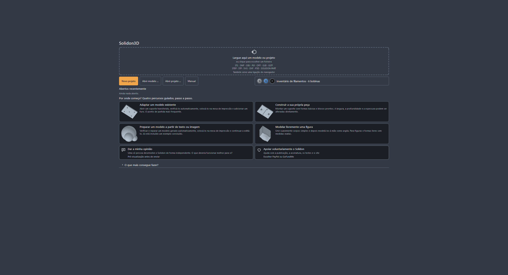
2. Arrastar um ficheiro para a janela. STL, 3MF, OBJ, GLB, PLY, OFF e STEP; além disso SVG e DXF para desenhos que se queiram extrudar. Se o ficheiro não registar nenhuma unidade — no STL nunca —, o Solidon pergunta em vez de adivinhar. Na dúvida, milímetros: quase tudo o que anda na internet está em milímetros.
Se o ficheiro ainda não estiver no disco, também serve o seu endereço: arrastar da janela do navegador a ligação de descarregamento para a janela, ou Ficheiro → Modelo da internet — o campo já vem preenchido com o que estiver na área de transferência. Quem apanhar o endereço da página do modelo em vez do ficheiro é avisado disso.
3. Olhar para o relatório de verificação. À direita está o que não bate certo no modelo. Buracos, faces duplicadas, triângulos virados ao contrário — em modelos descarregados isso é a regra, não a exceção. Cada achado tem um botão que o resolve.
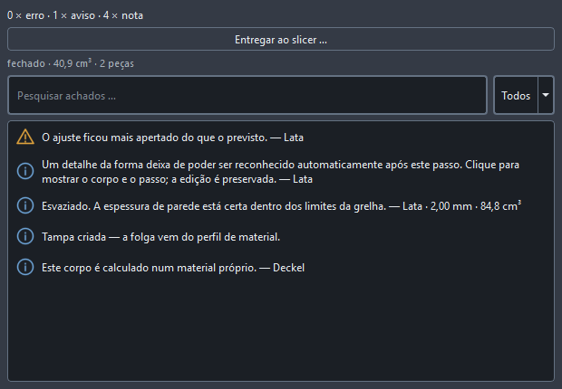
4. Reparar. Em regra basta a ação proposta no relatório. O modelo continua a ser o que era — a reparação é um passo no histórico e pode ser retirada.
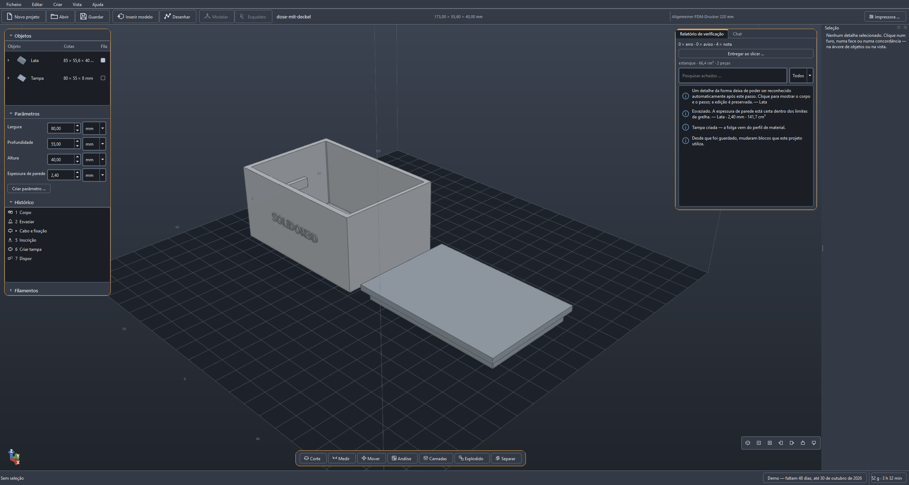
5. Apontar para a face onde o furo deve ficar e clicar com o botão direito. O menu nomeia exatamente as operações que servem para esta face — numa face plana, por exemplo, Colocar furo. O clique com o botão direito acerta sempre no mais preciso sob o ponteiro, sem trabalho prévio.
O clique esquerdo vai um passo mais lento, e isso é de propósito: o primeiro seleciona a peça inteira, o segundo o ponto dentro dela — uma face, um furo. É também assim que se chega à peça em si, para a mover ou rodar. Esc volta um nível atrás.
6. Introduzir o diâmetro e aplicar. O local e a direção já lá estão, porque a face estava selecionada. Todo o resto — tolerância, resolução — fica atrás de Mais definições e, por via de regra, não se toca.
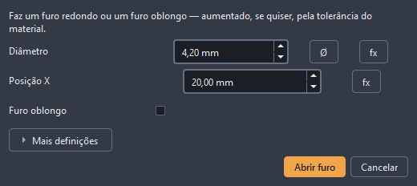
O resultado: o mesmo corpo, um furo a mais.
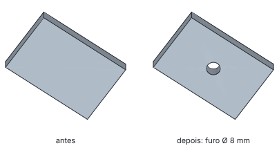
7. Se o furo ficou no sítio errado, é deslocado, não furado de novo. Um duplo clique no passo do histórico volta a abri-lo. Alterar o número, aplicar, pronto. Isso continua a valer para a semana.
8. Exportar. Ficheiro → Exportar, depois 3MF se o slicer o souber ler — senão STL. Este ficheiro vai para o slicer, e é ele que faz dele o G-Code.
A primeira passagem não precisa de mais. Tudo o resto neste manual é a ampliação disto.
A janela
Que área da janela responde a que pergunta.
Três zonas, e nenhuma delas se esconde.
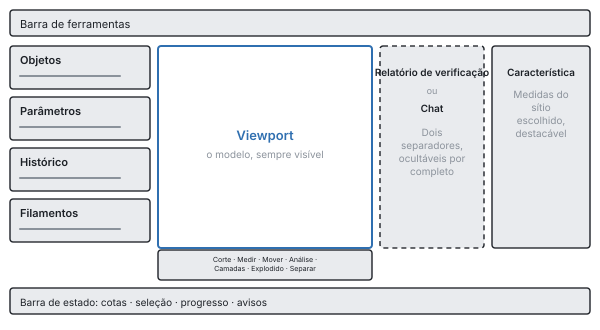
Em cima a barra de ferramentas: novo, abrir, guardar, Inserir modelo — e Desenhar, que faz do meio a área de desenho enquanto se desenha. Esc sai dali como sai de qualquer outra ferramenta. Os botões trazem apenas o seu símbolo; o nome aparece assim que o ponteiro para sobre um deles.
Por baixo do modelo a fila de ferramentas: Secção, Medir, Mover, Análise, Camadas, Explosão, Separar, Pintar — da esquerda para a direita em Alt+1 até Alt+8. A maior parte delas só olha; Mover, Separar e Pintar alteram mesmo o modelo, e as três fazem-no como passo no histórico.
À esquerda ficam a árvore de objetos, os parâmetros e o histórico uns por baixo dos outros, cada secção recolhível. A árvore de objetos mostra o que está na cena; a lista de parâmetros, as cotas com nome do projeto; o histórico, cada passo que levou ao estado atual.
No meio o modelo. O botão esquerdo do rato seleciona, o direito ou o do meio roda, Shift e arrastar desloca, a roda amplia na direção do ponteiro. Quem estiver habituado a outra coisa noutro programa muda nas definições para a atribuição de CAD ou do Blender.
À direita ou o chat ou o relatório de verificação — nunca os dois, porque os dois ao mesmo tempo ninguém lê. Se surgir um aviso, a vista salta sozinha para o relatório. Uma tecla oculta a coluna inteira, e então o modelo fica em ecrã inteiro.
Em baixo a barra de estado: cotas do que está selecionado, progresso de um cálculo a correr, avisos por resolver.
Não há modos de funcionamento. Nenhuma comutação entre “editar” e “construir”, nenhuma bancada de trabalho — há um estado, e esse estado é a cena.
Se andar à procura de alguma coisa, abra a paleta de comandos. Ela encontra qualquer operação pelo nome e mostra o atalho de teclado logo ao lado. Assim aprendem-se os atalhos de passagem, em vez de os decorar.
Olhar antes de imprimir
O que o relatório de verificação comunica, o que os mapas de análise mostram, e quando convém olhar.
Um modelo quase sempre fica bem no ecrã. Se se deixa imprimir está escrito noutro sítio — na espessura de parede no ponto mais fino, na saliência acima do limite, na ilha que começa no ar. Cinco ferramentas na barra por baixo da vista respondem a isso, e nenhuma delas altera o modelo.
Medir (barra de ferramentas, Medir) fixa dois pontos e mostra a distância. O ponteiro agarra-se a cantos e arestas, portanto não é preciso acertar, basta chegar perto. Para a espessura de parede basta um clique numa face: o Solidon manda um raio para dentro e mede onde ele volta a sair. Uma distância medida fica como cotagem até a retirar — assim comparam-se três medidas lado a lado, em vez de as guardar de cabeça.
A secção (Secção) põe um plano através do modelo e mostra o que está por trás dele. A face de corte é desenhada fechada, não como um buraco aberto — uma cavidade fica assim reconhecível como cavidade e não como falha na apresentação. O plano deixa-se percorrer com o cursor.
Os mapas de análise (Análise) colorem o modelo segundo um número. São sete: espessura de parede, saliência, necessidade de suportes e curvatura respondem à pergunta da imprimibilidade. Defeitos da malha mostra arestas abertas e sítios onde se encontram mais de duas faces — é quase sempre aí que está a causa, quando uma combinação falha. Atribuição de características colore aquilo que o reconhecimento fez do corpo: que face conta como furo, qual como bolsa. Ajustes mostra que faces participam num ajuste e qual delas está violada. A legenda indica sempre o intervalo de valores e a proveniência dos valores — um mapa sem escala é uma imagem bonita. Um clique num aviso do relatório de verificação leva a câmara até ao sítio.
A pré-visualização por camadas (Camadas) mostra o modelo tal como se desfaz em camadas. O cursor percorre-as; o que vê é a análise de camadas do próprio Solidon e não aquilo que o slicer calcula mais tarde. Os dois mundos de números ficam identificados em separado, para que ninguém tome uma estimativa por uma medição.
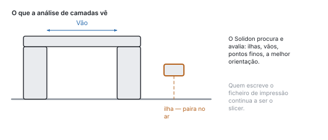
A vista explodida (Explosão) afasta vários corpos uns dos outros, para se ver o que encaixa em quê. Só desloca a apresentação — a pilha e a exportação ficam intocadas.
Nenhuma destas ferramentas cria uma operação. São óculos, não ferramentas: não se estraga nada com elas, e um desfazer não tem aqui nada que retirar.
Mover e pintar
Deslocar, rodar e dispor objetos — e atribuir faces a um filamento.
Duas ferramentas da mesma barra alteram mesmo o modelo: Mover e Pintar. Ambas cumprem a promessa do histórico — cada arrasto e cada traço é um passo próprio, que o Ctrl+Z retira um a um.
Mover liga a pega na imagem, o gizmo: três setas para deslocar, três anéis para rodar, um cubo para escalar uniformemente — rotulados com X, Y, Z e S. Ao largar, o arrasto fica no histórico como Deslocar, Rodar ou Escalar, com números que ali se podem alterar depois como quaisquer outros. A captura à grelha e a captura de ângulo arredondam cada arrasto para o passo definido — um milímetro e quinze graus são a predefinição, zero significa: sem captura.
Durante o arrasto, o número está por cima da imagem. Quem o quiser exato escreve-o: o primeiro algarismo toma conta do arrasto, o Enter aplica exatamente o valor escrito — sem captura, porque quem escreve quer exatidão — e o Esc descarta o arrasto por completo.
Se estiver escolhida uma face, a pega assenta sobre a face. Um arrasto nela afasta a face na sua direção, e as paredes vizinhas crescem com ela (Afastar face) — do paralelepípedo de 20 mm faz-se um de 25 mm, e não uma caixa deslocada. O que for arrastado transversalmente à face perde-se: uma face só conhece para a frente e para trás.
O cubo escala uniformemente — para uma medida final exata existe Ajustar à medida, para distorcer por eixo existe a caixa de diálogo de Escalar. E quem quiser encostar duas peças uma à outra não arrasta ao pixel, mas usa Alinhar à característica: face sobre face, furo sobre furo.
Pintar transforma cliques em pinceladas. Ligar Pincel ativo, escolher o slot e o raio, clicar no modelo — isso altera os slots de material e com eles o modelo, não apenas a imagem. Na exportação para 3MF nasce daí a troca de filamento para a impressora. O ângulo de aresta detém o pincel nas arestas, para que uma cor não corra pela esquina; 180 graus significa: por cima de tudo.
O histórico vê as duas exatamente como uma entrada de menu: as mesmas operações, o mesmo desfazer, a mesma possibilidade de mudar de ideias.
Desenhar
Desenhar com restrições: linhas, arcos, condições, e o que se faz disso depois.
Para o contorno que nenhum corpo base dá. Um bloco com um furo não precisa de desenho — uma placa base com um recorte onde caiba uma fonte de alimentação precisa.
Começa-se em cima, na barra de ferramentas. O quinto símbolo a contar da esquerda é Desenhar — os botões de lá não trazem rótulo, o seu nome aparece no ponteiro. Faz do meio da janela a área de desenho, e o que daí sai decide-o no fim — não antes. Esc sai dali, como sai de qualquer outra ferramenta.
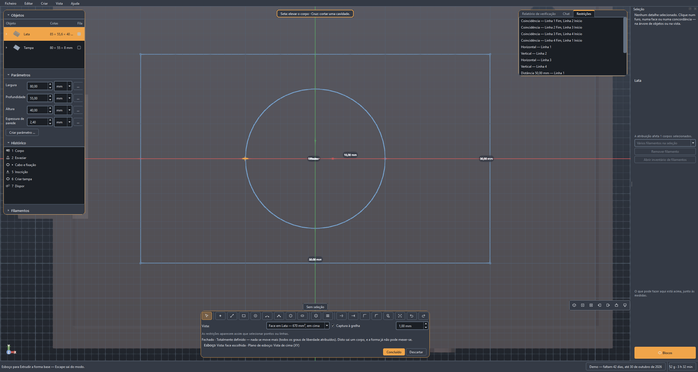
Primeiro o plano, depois a linha. XY fica deitado como a mesa de impressão, XZ e YZ ficam ao alto. Se houver um corpo na cena, as suas faces planas entram também na lista — então desenha-se diretamente sobre o topo de uma peça. A frase ao lado da escolha diz como ficam as camadas de impressão em relação a ele: em XY paralelas ao desenho, nos planos ao alto atravessadas — e atravessadas quer dizer que uma linha horizontal na imagem será mais tarde uma junta. Numa face clicada é a sua inclinação que decide, e a frase nomeia-a: deitada, atravessada ou oblíqua em relação às camadas.
As ferramentas e as suas teclas: linha L, círculo C, arco A, ponto P, spline S, aparar T. Esc volta à seleção e cancela um elemento começado. A linha continua como traçado — o fim é o princípio da seguinte. Um spline vai juntando pontos até dizer que está pronto: duplo clique, Enter, ou clicar mais uma vez no último ponto.
Há contornos prontos à mão. Em Forma base: retângulo (R), ranhura, círculo, hexágono — e os dois que de outro modo seriam trabalho manual, o círculo de furos e a grelha de furos. Entram como desenho com restrições, não como um monte de pontos, e depois podem ser cotados como o que se desenha à mão.
Ver, escolher, arrastar. A roda do rato amplia, o botão do meio desloca a folha — aqui não se roda nada, um esboço é plano. Ajustar à vista (Home) traz tudo de volta à imagem, e ao abrir isso já aconteceu: um desenho existente enche a área, uma folha vazia mostra o volume de impressão inteiro. Com Selecionar, arrastar um ponto agarra esse ponto e desloca-o; o solucionador puxa atrás o que dele depende. Ctrl ao clicar vai juntando, e isso não é uma subtileza: Paralelo e Perpendicular precisam de duas linhas, Simétrico de dois pontos e de um eixo. A ordem dos cliques conta — “A paralelo a B” não é “B paralelo a A”. Del apaga a seleção juntamente com as restrições que dela dependiam; se, pelo contrário, o foco estiver na lista de restrições, Del apaga ali a entrada. E Ctrl+Z também vale aqui, para o último traço na folha e não para o último passo no histórico.
Um clique perto de um ponto existente agarra-o. Isso é mais do que comodidade: os dois pontos recebem uma Coincidência e ficam juntos, mesmo que mais tarde outra coisa se desloque. Dois pontos que apenas por acaso têm as mesmas coordenadas não ficam.
Cotar enquanto se desenha. Na linha e no círculo, o campo da medida na barra fica ativo depois do primeiro clique: escrever o comprimento ou o diâmetro, Enter — a direção vem do ponteiro, o número vem do campo, e fica como restrição. Depois, o mesmo se faz com D sobre dois pontos selecionados, e aí pode estar uma expressão: @largura/2 liga a cota a um parâmetro do projeto, em vez de a repetir.
São as restrições que seguram o desenho, não as coordenadas. Selecionar alguma coisa e depois o botão — ou o botão direito do rato ali mesmo. São dez: distância, coincidência, horizontal, vertical, paralelo, perpendicular, tangente, simétrico, fixo e a cota de referência, que mede sem segurar. O que não serve para a seleção fica acinzentado. À direita estão todas numa lista; quem passar por cima de uma entrada vê acenderem-se os pontos que ela segura, e Del retira-a.
![O modo de esboço: em cima as ferramentas de desenho com as suas teclas — linha L, círculo C, arco A, spline S —, por baixo a escolha do plano com a nota sobre como as camadas ficam em relação a ele. Na área de desenho um retângulo cotado de 40 mm com um círculo lá dentro, a borda do volume de impressão a tracejado, um ponto capturado assinalado. À direita a lista das restrições — horizontal, perpendicular, distância, coincidência, tangente — com os pontos que cada uma segura. Em baixo a linha de estado: determinado, todos os graus de liberdade estão atribuídos.](../handbuch/pt/sketch-editor-dark.svg)
Em baixo está escrito quão firme está o desenho. Determinado quer dizer que cada número está atribuído e que nada mais se desloca. “Quatro graus de liberdade ainda estão livres” quer dizer que quatro coisas ainda não estão fixadas — o esboço funciona à mesma, só que ainda se pode deslocar. Se duas cotas se contradisserem, o Solidon diz quais, e a última posição válida mantém-se: uma restrição impossível não destrói o que está desenhado.
Alterar sem voltar a desenhar: Aparar corta fora a metade clicada, Prolongar deixa-a crescer, Deslocar (O) põe um contorno ao lado, a uma distância — negativo vai para dentro —, Espelhar atira a seleção contra o eixo X ou o eixo Y. Geometria auxiliar (X) faz de uma linha uma linha que suporta restrições mas não forma perfil: a linha média de que algo depende simetricamente não deve ser extrudida junto. E Projetar traz para o desenho as arestas dos corpos existentes neste plano — a maneira de alinhar alguma coisa por uma peça importada, em vez de a medir e de a escrever à mão.
A borda do volume de impressão está desenhada — a tracejado, com a sua medida ao lado, e quem desenhar para lá dela lê isso na mesma linha: o esboço sai para fora. A área de desenho é assim o sítio mais cedo em que se dá conta de que uma peça não cabe na placa — mais cedo do que qualquer relatório de verificação. Numa peça pequena o quadro fica fora da imagem, e isso é de propósito: cabe de qualquer maneira. Assim que o desenho fica maior do que a placa, o quadro entra sozinho na imagem.
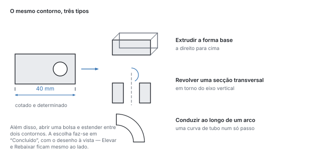
No fim o Solidon pergunta o que é que aquilo vai ser. O botão Concluir mostra os cinco tipos, cada um com uma frase: extrudir, cortar como bolsa, rodar em torno do eixo vertical, conduzir ao longo de um arco, ou estender entre dois contornos. Voltar ao desenho também está ali — não deita nada fora, volta a abrir o mesmo desenho.
Depois disso, o desenho é um valor como qualquer outro. Está no histórico como parâmetro da operação, e um duplo clique no passo volta a abri-lo através de Desenhar …. Uma linha que ficou dois milímetros ao lado é deslocada — a operação por cima dela volta a calcular, e o resto do projeto fica como estava.
Os contornos entram no segundo núcleo de cálculo como curvas exatas: um círculo desenhado dá um cilindro redondo e não um polígono com muitos cantos.
Os quatro caminhos
Adaptar, construir, gerar, modelar — quatro caminhos para a mesma cena.
Quase toda a tarefa segue um de quatro caminhos. Para cada um está pronto um projeto de exemplo — no ecrã inicial —, e cada um abre com uma visita guiada: à direita está, passo a passo, o que deve experimentar, e a visita dá conta por si de quando um passo está feito.
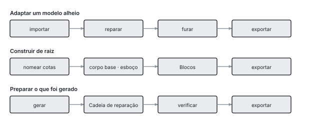
Caminho 1 — adaptar um modelo alheio. Descarregou alguma coisa e quase serve: ler, reparar, furar, exportar. O caminho mais frequente, e aquele em que a reparação conta.
Caminho 2 — construir de raiz. Alguma coisa nova a partir de corpos base, blocos e desenhos, com parâmetros com nome: largura, profundidade, espessura. Se um número muda, a peça muda. O que nenhum corpo base dá, desenha-se — o símbolo Desenhar, em cima na barra de ferramentas, descrito no capítulo anterior.
Caminho 3 — preparar um modelo gerado. O que um modelo de imagem entrega é uma superfície e não uma construção. Ela passa pela cadeia de reparação, e os furos nascem depois, como passos próprios — e não por se medir a malha.
Caminho 4 — modelar uma figura. Uma forma que não se pode cotar: composta a traços largos com primitivas, fundida suavemente e depois moldada à mão. O seu próprio capítulo está mais abaixo; o que o distingue dos outros três é que aqui conta um gesto e não um número.
Modelar
Modelar à mão — e porque toda uma sessão continua a ser um passo.
Algumas formas não se podem cotar. Uma pega que deve assentar na mão, uma figura, uma transição crescida — é para isso que existe o pincel.
O caminho até lá tem três etapas, e a primeira salta-se de bom grado. Primeiro uma forma grosseira a partir de primitivas, fundidas suavemente («Fundir suavemente» no menu «Modificar»); depois «Refinar as arestas uniformemente», para que haja vértices por igual em toda a parte; a seguir «Modelar». Quem salta a segunda etapa pinta sobre uma malha que não consegue seguir o pincel: a barra di-lo assim que a sessão abre.
Toda a sessão é um passo do histórico. Não um passo por traço: uma figura são vários milhares de traços, e um histórico com quatro mil entradas já não é um. Ctrl+Z desfaz um traço durante a sessão e toda a sessão depois.
Seis ferramentas. «Adicionar» e «Rebaixar» são o mesmo com sinal contrário. «Suavizar», «Inflar» e «Aplanar» leem o que está antes delas e custam por isso uma passagem extra cada uma — a barra mostra quantas são. «Beliscar» puxa para o centro do traço e faz arestas.
Dentro de uma etapa a ordem é indiferente. Dois traços sobre o mesmo ponto somam-se na superfície de partida, em vez de o segundo assentar no resultado do primeiro. Quem não quiser isso marca «Recomeçar»: então o traço seguinte começa sobre o que está lá. O interruptor vale para um traço.
A simetria pode mudar-se depois. Está na operação e não no traço isolado: uma sessão terminada pode ser espelhada com ela. Espelha-se em relação à origem do objeto — não ao seu centro de massa, que se desloca ao modelar.
Quando esta ferramenta não é a certa. Numa peça que ainda está a ser cotada: um traço fica num ponto do espaço, e quem muda a forma por baixo retira-lhe a superfície. Para uma transição entre dois corpos é melhor «Fundir suavemente» — três números em vez de cem traços, e alterável a qualquer momento. E quem modela um busto é mais bem servido por um programa feito para isso; seis pincéis são seis pincéis.
O que este programa consegue e os outros não: enquanto molda, a espessura de parede corre em paralelo. Os pontos demasiado finos surgem como número na barra, antes de o slicer os encontrar.
O histórico
Porque é que cada passo continua alterável e o que mantém uma transação unida.
Cada operação está no histórico, e é lá que permanece editável. É esta a diferença de que depende tudo o resto: aqui, um modelo não é uma malha de triângulos, mas a lista dos passos que o originaram.
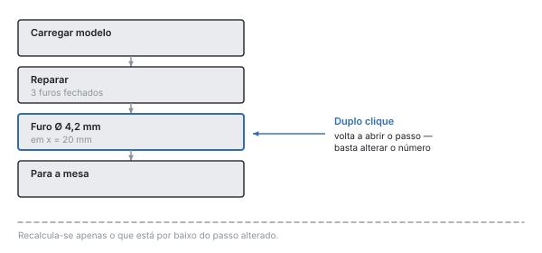
Duplo clique num passo volta a abri-lo — com os valores que estão no ficheiro. Quem quiser deslocar um furo dois milímetros altera o número; só se recalcula o que vem abaixo.
Desfazer recua uma transação inteira, não meio passo. Uma proposta do chat é exatamente uma transação — um desfazer retira-a por completo.
Dois limites são intencionais. Os passos desfeitos caem assim que chega um novo: não há ramificações. E uma alteração que muda o número de objetos enquanto passos posteriores trabalham com eles é recusada — os novos corpos não são os antigos, e um erro no fim causado por um número no início é um erro que já ninguém consegue rastrear.
Clicar prepara o terreno. Quem seleciona uma face na janela e depois chama uma operação encontra posição e eixo já preenchidos. O tamanho não: um escareamento toma a cabeça do parafuso, não o diâmetro do furo em que assenta.
Parâmetros e expressões
Cotas com nome em vez de números no modelo, com expressões entre elas.
Um projeto tem parâmetros com nome — largura, profundidade, parede — e as operações podem contar com eles em vez de com números fixos.
Por que é que isto é mais do que comodidade. Um número que está em sete sítios são sete números: quem o altera altera seis deles e não vê o sétimo. Um parâmetro é um número num sítio. Mexa em largura e tudo o que dele depende segue de uma vez — o furo do meio fica no meio, porque ali está =@largura/2 e não “35”.
É assim que se cria um. À esquerda, em Parâmetros, clicar em Criar parâmetro, introduzir nome e valor. No campo de uma operação escreve-se depois =@largura em vez de um número — o sinal de igual faz do campo uma expressão, o arroba remete para um parâmetro.
O que pode estar numa expressão: as quatro operações básicas, parênteses, min, max, abs, round e referências a outros parâmetros. =@largura/2 - @parede é permitido, =max(@largura, 40) também.
Tudo o resto não é permitido, e isso é de propósito: a expressão é calculada por um avaliador próprio, não pelo Python. Um ficheiro de projeto é um ficheiro e não um programa — anda de pessoa em pessoa como relato de erro, e o que está lá dentro não pode executar nada. E um modelo de linguagem que tenha escrito a expressão não muda nada nisso.
As referências em círculo são detetadas e nomeadas. Se a aponta para b e b para a, o Solidon diz isso em vez de calcular até ao fim.
Calcula-se sempre em milímetros e em dupla precisão. Arredondado é só o que se mostra — aquilo que lê como “40,00 mm” é, no núcleo, um número com todas as casas.
Material, tolerâncias, ajustes
De onde vem a folga de que uma tampa precisa — e porque não é estimada.
Aquilo que distingue o Solidon de um slicer.
Uma peça impressa nunca fica tão grande como foi desenhada. O plástico contrai ao arrefecer, um furo de 5 mm sai mais apertado, e a camada de baixo é esmagada mais larga do que todas as de cima. Quem quer encaixar duas peças uma na outra tem de contar com isso — e é exatamente isso que o Solidon tira das suas mãos.
A folga está no perfil de material, não no modelo. Quem quer meter um pino num furo não escreve 0,2 — diz ajuste, e o número vem do perfil do material com que se imprime.
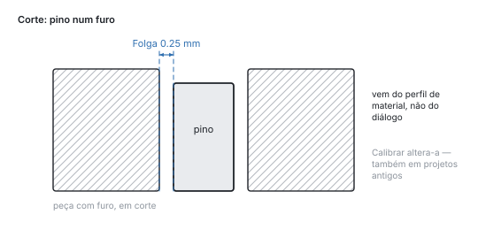
É por isso que uma calibração age para trás. Em Editar → Calibrar material introduz-se o valor medido. A partir daí vale para todos os ajustes — também para os de projetos criados antes.
Mede-se imprimindo, não estimando. O corpo de teste de tolerâncias põe pinos e furos com folgas escalonadas numa placa: imprimir uma vez, experimentar, e o valor fica. A escada de espessuras de parede e o leque de saliências fazem o mesmo para a espessura mínima de parede e para o ângulo a partir do qual esta impressora precisa mesmo de suportes — em vez da regra empírica dos 45 graus.

A primeira camada é um caso à parte. É pressionada contra a mesa e, com isso, alastra para fora. Num ajuste que fica na base da peça, é a diferença entre “entra” e “não entra”.
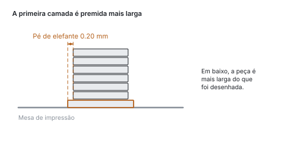
A peça de prova recorta um cubo em volta de um ponto, em vez de o reconstruir. O que se imprime é a geometria verdadeira com a tolerância verdadeira: dois minutos em vez de duas horas, e o resultado vale para a peça.
Uma cena pode ter vários materiais. Uma junta de TPU numa caixa de PETG contrai de outra maneira e quer mais folga. Com Definir material, cada corpo recebe o seu próprio perfil, e as tolerâncias, o pé de elefante e a verificação de ajustes calculam com ele.
Os blocos
Ligações comprovadas da biblioteca, em vez de geometria construída por si.
Meter um sextavado tão fundo numa parede que uma porca M4 lá caiba e o parafuso ainda agarre é meia hora de trabalho — da primeira vez. A biblioteca de blocos trata disso: escolher o bloco, escolher o tamanho, pousá-lo na face.
As medidas vêm de uma tabela, não da memória. Que medida entre planos tem um sextavado M4, quão fundo assenta uma bucha de inserção, quão larga pode ser uma dobradiça de filme — isso é consultado, não estimado.
Alojamento de porca — a bolsa para uma porca sextavada, colocada durante a impressão. A forma mais frequente de obter numa peça impressa uma rosca que aguente carga.

Bucha de inserção a quente — o furo escalonado para uma bucha de latão, derretida para dentro com o ferro de soldar. Dá mais trabalho do que o alojamento de porca, mas pode desapertar-se as vezes que se quiser.
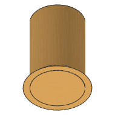
Patilha de encaixe — o braço elástico que cede ao juntar e depois engata. Uma tampa que segura sem parafuso.

Dobradiça de filme — uma zona tão fina que se dobra em vez de partir. A articulação é impressa junto, não há nada para montar.

A isso juntam-se o furo para parafuso, a bolsa para íman, a passagem de cabo, a nervura, o buraco de fechadura, a rosca impressa e os corpos de ensaio do capítulo anterior. O catálogo mostra uma imagem de cada um — uma biblioteca que não se vê não existe para quem a usa.
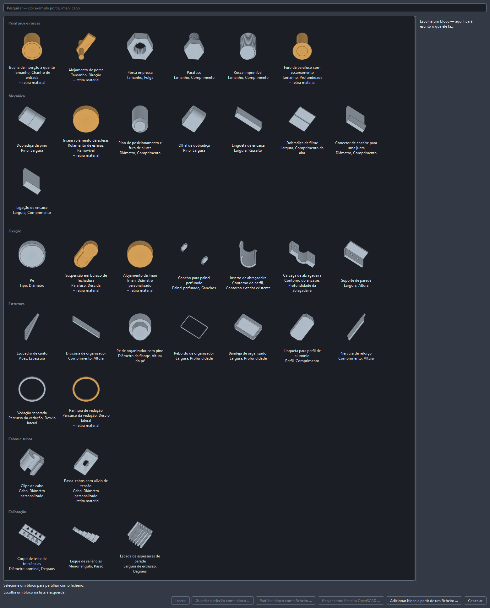
Cada bloco continua tão alterável como qualquer outra operação. Está no histórico, as suas medidas podem ser corrigidas mais tarde, e os sítios em que assenta mantêm o seu nome.
Para a mesa e para fora
Do modelo pronto até à entrega ao slicer.
Dispor na mesa coloca os objetos lado a lado e começa uma nova placa assim que a atual fica cheia. O que mesmo assim não couber não é deixado de fora — é comunicado.
Grande demais para a mesa? Separar corta onde se aponta; Dividir automaticamente corta até cada pedaço caber. O plano de corte é procurado, não adivinhado, cada face de corte recebe dois pinos de posicionamento, e cada corte continua a ser um número que se pode alterar depois.
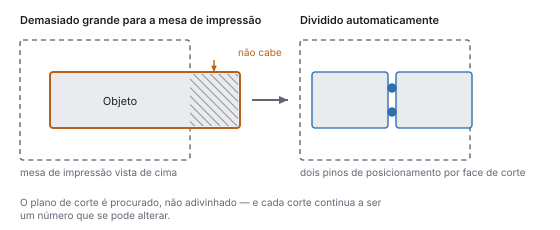
O que cresce inclinado para fora precisa de suportes em algum momento. Quão inclinado depende da impressora e não de uma regra empírica — por isso o leque de saliências mede em vez de estimar.
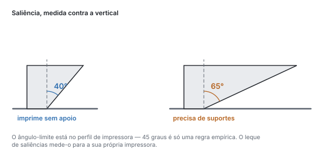
Paredes finas demais não imprimem. Menos de dois cordões lado a lado não sustenta nada e parte assim que se retiram os suportes.
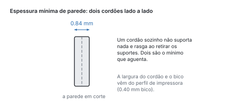
A exportação vai para STL, 3MF ou STEP. 3MF é o que os slicers preferem, e leva consigo os slots de material como grupos de cor; o STL não conhece cores e, consequentemente, perde-as. O STEP existe para corpos exatos, com faces e arestas verdadeiras.
Para mostrar, há o GLB. Não para imprimir — não conhece unidades para isso —, mas para enviar: as cores e o nome viajam juntos, e o destinatário gira a peça no navegador sem instalar nada.
O slicer fica de fora. A análise de camadas procura e avalia — ilhas, vãos, zonas finas, a melhor orientação —, mas quem escreve o ficheiro de impressão é o slicer. Onde ambos apresentam números, indica-se sempre qual veio de onde.
Quando a peça não cabe na mesa
Dividir, colocar pinos e dispor, quando o volume de impressão não chega.
Um volume de impressão é finito, e a peça de que se precisa às vezes não é. Então divide-se — e a pergunta não é se, mas onde e como é que as metades voltam a juntar-se.
O caminho mais curto é a ferramenta Separar no fim da fila de ferramentas (Alt+7). Dois cliques na peça traçam uma linha, e separa-se entre eles — a direito para dentro do ecrã. Quem vê onde deve ficar a junta já não tem de traduzir esse ponto numa coordenada. A caixa Preparar para encaixar está marcada desde o início: pinos numa metade, os furos correspondentes na outra. Ao lado está o que as mantém juntas:
- Redonda imprime melhor e precisa de dois, ou as metades podem rodar uma contra a outra.
- Hexagonal segura sozinha contra a rotação.
- Cauda de andorinha segura ainda contra a separação transversal à junta: atrás é mais estreita do que à frente.
- Encaixe engata: um braço elástico numa metade, uma bolsa com ressalto na outra. Segura sem cola, e as metades voltam a separar-se. Para isso precisa de espaço — a junta tem de dar pelo menos 5,4 mm, senão o braço ficaria curto demais para flectir. Se for mais estreita, ficam pinos redondos, e o relatório diz porquê.
Preparar → Dividir automaticamente trata também da busca. O plano de corte é procurado, não adivinhado: pela mesma análise de camadas que a busca de orientação, e são pesadas três coisas. Uma costura feita de um contorno é melhor do que uma que se desfaz em cinco frisos finos. Um traçado prismático — a secção transversal quase não muda ao longo de um milímetro — cola-se melhor do que uma inclinação. E as metades devem ter tamanho parecido. O número de contornos pesa mais do que tudo: uma costura em vários frisos é pior do que qualquer desequilíbrio.
Em cada face de corte entram dois pinos de posicionamento. O seu diâmetro vem da face, a sua folga vem do perfil de material calibrado — e não de um número adivinhado. Para cada pino nasce um par de ajuste, e esse é verificado em cada avaliação. Dois pinos em vez de um, para que as metades não se possam torcer uma contra a outra.
Cada corte é uma operação própria. O plano de corte fica assim a ser um número que se pode deslocar depois, e um desfazer retira um corte em vez da divisão inteira.
O cursor “Explosão” por baixo da vista afasta as peças para se poderem ver — só desloca a apresentação. O que a pilha diz e o que é exportado ficam onde estão.
Quem preferir escrever o plano em vez de o apontar usa Preparar → Separar e introduz eixo e posição. A mesma operação, apenas sem a busca à frente; zero pinos significa aí: apenas cortar.
O nome das metades diz qual é qual. Depois de pinar, a árvore de objetos mostra «… A · Pinos» e «… B · Furos» — na exportação, o nome do ficheiro é a única indicação sobre qual das duas peças se tem na mão.
Experimentar em vez de adivinhar: variantes e calibração
Imprimir várias cotas lado a lado e assumir o valor medido.
O número que decide um ajuste é a folga — e ela depende da impressora, do material e do bico. Adivinha-se uma vez; depois disso, mede-se.
O caminho até lá é uma peça de ensaio. Em Blocos → Corpo de teste de tolerâncias nasce uma fila de pinos e furos com folga escalonada — de origem, quatro degraus a partir de 0,10 mm, cada um 0,05 mm mais, portanto até 0,25 mm. Ambos se deixam alterar na caixa de diálogo, se o intervalo não acertar. Imprimir uma vez, experimentar tudo, guardar o valor que entra justo.
Esse valor pertence ao perfil de material, não ao modelo: Editar → Calibrar o material. Como toda a tolerância no programa é uma referência e não um número, também uma peça feita antes da calibração passa a contar com ele. Uma tampa da semana passada ajusta melhor depois da entrada, sem que ninguém lhe toque.
O mesmo existe para as espessuras de parede (leque de espessuras de parede) e para as saliências (leque de saliências) — os dois outros números que de outro modo se estimam.
Quando um número não depende do material, mas da peça, ajuda o gerador de variantes: Modificar → Gerar variantes faz um parâmetro do projeto percorrer um intervalo e põe as execuções lado a lado. Cinco diâmetros de pega numa placa, uma impressão, uma decisão. A pilha fica intocada — as variantes são uma saída, não uma alteração ao projeto.
O chat
Como se fala com o agente, o que ele vê e quanto custa uma proposta.
O chat chama as mesmas operações que estão nos menus — é uma segunda mão na mesma ferramenta, não um segundo caminho a contorná-la.
Daí seguem duas coisas. Cada proposta é exatamente uma transação: um desfazer retira-a por completo, nunca pela metade. E o chat não calcula geometria — escolhe operações e valores; quem calcula é o programa.
A sequência é sempre a mesma. Escreve o que quer. O chat responde com uma proposta — uma lista de operações, ainda não executadas. A vista mostra a azul e laranja o que seria acrescentado e o que desapareceria. Só Aplicar a inscreve no histórico; Descartar não deixa nada para trás.
Recebeu quatro regras, e elas não estão em negociação: blocos antes de formas construídas à mão, uma lista de operações antes de código-fonte OpenSCAD, parâmetros com nome antes de números digitados — e perguntar antes de adivinhar. Se o seu pedido tem duas leituras, volta uma pergunta e não um resultado.
O que ele vê não é o histórico em bruto, mas uma ficha: cotas, características reconhecidas, parâmetros do projeto, a seleção atual, o relatório de verificação. Um contributo desfeito conta como descartado — depois de um desfazer, ele não argumenta com um estado que já não existe.
Em cada transação está escrito de onde veio (§26.4): modelo, versão do prompt de sistema, versão da coleção de regras. Quem quiser saber daqui a meio ano por que razão um furo está ali encontra a resposta no histórico.
Precisa de um modelo: ou uma chave própria (Editar → Configurar o chat, guardada no porta-chaves do sistema, nunca no ficheiro do projeto) ou um Ollama local. Para as chamadas de ferramentas tem de ser suficientemente grande; abaixo de 7B falham de forma reproduzível.
Tudo o resto no Solidon dispensa o modelo de linguagem. Sem chave, o chat fica acinzentado e diz porquê numa frase — mais nada acontece.
Mandar gerar um modelo
Uma malha a partir de texto ou imagem — e o que é preciso depois para a tornar imprimível.
O terceiro caminho (§2.2): descreve uma peça ou põe lá uma imagem, e um gerador faz dela uma malha. Ficheiro → Gerar um modelo.
O cálculo não acontece no Solidon, mas num ComfyUI local na porta 8188. Se não houver nenhum a correr, a entrada fica acinzentada e diz porquê; tudo o resto continua a funcionar. Que nós são usados está escrito em dois ficheiros ao lado do programa — quem tiver outro gerador troca o ficheiro e não o código-fonte.
O que volta é uma superfície e não uma construção. É a frase mais importante sobre este caminho. Uma malha gerada não tem furos, não tem ajustes e muitas vezes não é estanque — tem uma forma. Furos e ajustes nascem depois, como operações próprias, e não por se medir a malha.
Os modelos não são nossos, e as suas licenças também não. Que modelo o ComfyUI usa decide você — o Solidon não traz nenhum. O fluxo de trabalho incluído usa o TripoSG, cuja licença MIT aqui não deixa nada em aberto; o mais divulgado Hunyuan3D não está expressamente licenciado para a União Europeia. O fluxo nomeia papéis e não nomes de ficheiro: pôr outro modelo a trabalhar significa instalá-lo, mais nada.
O que é gerado torna-se uma fonte, não uma operação. Um gerador não é uma função: o mesmo pedido dá outra coisa depois de uma troca de modelo. Os bytes ficam por isso no projeto como um ficheiro arrastado para dentro, e a pilha por cima deles é a habitual — Carregar, depois Reparar. Pedido e semente ficam na fonte, para que o ficheiro diga de onde vem a geometria.
A cadeia de reparação corre sem perguntar, mas como passo próprio: visível no histórico, visível no relatório, reversível. As malhas geradas raramente estão fechadas, e o que lhes falta é sempre o mesmo — fechar buracos, soldar pontos, endireitar as normais.
A mesma semente dá o mesmo resultado, na medida em que o modelo do outro lado o permita. Está na caixa de diálogo e é guardada junto.
Configurar os programas adicionais
Os quatro programas que o Solidon pode usar — o que cada um traz e o que falta fazer depois de instalar.
Nenhum deles é obrigatório. Sem todos os quatro, todo o caminho central continua a funcionar: ler um modelo, alterá-lo, verificá-lo, exportá-lo. O que falta são funções concretas — e esta página diz quais.
A lista está em Ajuda → Programas adicionais. Cada linha indica a finalidade, o estado e o local; onde o Solidon pode instalar por si próprio há um botão. Só se instala se alguém o premir.
No Windows isto passa pelo winget, no macOS pelo Homebrew, no Linux pelo Flatpak — e sempre sem direitos de administrador. Se faltar o gestor de pacotes, ao lado está o comando para copiar e a página do fabricante.
Quando algo está num local pouco habitual, ajuda Indicar local …: nenhum processo de busca encontra uma instalação portátil num segundo disco, e a partir daí essa indicação ganha sempre.
OpenSCAD
O recurso de reserva para formas para as quais não existe um bloco. É apenas invocado, nunca distribuído, e todo o código é verificado antes. Se faltar, a operação afetada di-lo e propõe um bloco.
O slicer
Para o ficheiro de impressão e a contraprova a partir do G-code. São reconhecidos todos os habituais — PrusaSlicer, OrcaSlicer, ElegooSlicer, BambuStudio, Cura. O Solidon também lê o seu perfil de impressora e, no primeiro arranque, propõe a impressora que o slicer tinha por último.
Ollama — para o chat sem chave própria
Aqui são três passos, e o primeiro é o menor. Instalado, o Ollama não traz modelo nenhum e não corre necessariamente — ambas as coisas resolve Editar → Configurar o chat:
1. Está a correr? O diálogo di-lo numa frase. Se disser «instalado, mas não está a correr», um botão inicia-o. Se correr noutro computador, o seu endereço pertence à lista de programas adicionais. 2. Obter um modelo. A seleção indica o que está instalado e, abaixo, os comprovados com o respetivo tamanho. Obter modelo descarrega-o — cinco a nove gigabytes, com progresso e com saída. Um download cancelado continua na tentativa seguinte. 3. Testar as ferramentas. O passo mais importante, e responde a duas perguntas: se um modelo chama realmente as ferramentas não o diz nem o seu tamanho nem o seu fornecedor. O teste faz um turno real. Se disser «escreve as chamadas como texto», o chat responde mas não executa nada; então ajuda outro modelo.
E mede com que rapidez esta máquina o faz. O Ollama só usa certas placas gráficas; com todas as outras calcula no processador, e isso não é outra velocidade mas outra ordem de grandeza — apenas oito tokens por segundo medidos na leitura, numa máquina com gráficos Intel Arc. As instruções do Solidon têm cerca de 19 000 tokens; ali passam quarenta e um minutos antes de uma resposta começar. Se a prova o disser, não é uma avaria mas a informação: nessa máquina o caminho local não vale a pena, e um modelo mais pequeno muda pouco.
Há um segundo caminho local, e o Solidon não o configura: para gráficos Intel existe IPEX-LLM, para AMD ROCm, para ambos OpenVINO — cada um é uma instalação própria com as suas próprias armadilhas, e nenhum é oferecido pelo Ollama. Quem se meter nisso vê a sua placa usada; quem não, toma uma chave para um modelo alojado. Ambas as coisas são defensáveis, e tudo excepto o chat funciona sem nenhuma.
O qwen3:14b provou-se: acerta quatro de cinco chamadas de ferramenta e, para isso, precisa de uma placa gráfica com 16 GB. Modelos menores são mais rápidos e acertam menos; abaixo de sete mil milhões de parâmetros as chamadas falham de forma reproduzível.
Um modelo local é mais lento e menos exato do que um alojado. Para instruções curtas basta; para turnos longos vale a pena uma chave própria, que fica então no porta-chaves do sistema.
ComfyUI — para gerar a partir de texto ou imagem
Também aqui instalado é só metade. O ComfyUI precisa dos nós que o fluxo utiliza e do modelo que estes carregam. O Solidon coloca ambos: na lista de programas adicionais, a linha do ComfyUI tem Configurar nós e modelo ….
O caminho curto passa pelo próprio diálogo de geração. Ficheiro → Gerar modelo diz até onde vai o gerador e distingue três situações: nenhum está a correr, um corre sem os nós, ou tudo está pronto. Na do meio o botão de configuração está logo ao lado — não é preciso mandar gerar primeiro para saber que falta algo.
O diálogo encontra o ComfyUI por si. A edição para computador da comfy.org não tem de adivinhar — essa anota onde se instalou, mesmo numa pasta escolhida à mão. A edição portátil descompacta-a o utilizador; se estiver num lugar pouco habitual, a pasta tem de ser indicada: aquela em que estão custom_nodes e main.py.
Depois correm cinco passos: colocar os nós, obter o código do TripoSG, corrigir dois pontos nele, acrescentar os pacotes que faltam — e verificar se o ComfyUI consegue carregar os nós. O último custa dois segundos e é o que conta: sem ele a configuração anunciava «concluído» e o erro só chegava ao gerar. Se se quiser, depois o modelo, cerca de 7,5 GB; se a ligação se cortar, outra execução continua onde ficou.
Depois reinicie o ComfyUI uma vez. Ele lê os seus nós no arranque; sem o reinício, Gerar modelo fica cinzento mesmo estando tudo no lugar.
Para o caminho por texto acresce um modelo SDXL em models/checkpoints — isso é assunto do ComfyUI. Para o caminho por imagem não é necessário nenhum.
Quanto tempo leva decide-o a placa gráfica. Numa RTX 4080 são treze segundos por corpo; em gráficos Intel Arc sem CUDA, dois minutos medidos. Ambas as coisas funcionam, e o Solidon espera enquanto o ComfyUI calcula — o que se interrompe é uma avaria e não lentidão, e então a frase do ComfyUI está no diálogo.
E o que vem incluído
O OpenCASCADE para arestas exatas e o V-HACD para a indicação de onde um corpo se separa por si estão no instalador. Quem executa o Solidon a partir do código-fonte encontra-os na mesma lista e instala-os a partir de lá.
Superfícies e preenchimentos
Padrões como geometria real, preenchimentos em treliça e corpos esvaziados.
Um serrilhado para a pega, um favo pelo aspeto, uma grelha em vez de material maciço — tudo isso é geometria verdadeira, não uma textura na imagem. O que o slicer recebe é aquilo que vê.
Há oito padrões à escolha — nervura, onda, serrilhado direito e cruzado, favo, covinhas, Voronoi e ruído. O serrilhado dá aderência à mão, o favo e a nervura são ornamento, o Voronoi e o ruído escondem as linhas das camadas. Na caixa de diálogo, ao lado da lista, está uma pré-visualização, desenhada a partir dos mesmos contornos que depois são impressos.
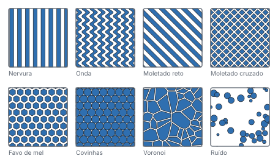
Aplicar textura grava um padrão numa face, em relevo ou em baixo-relevo. São dois números que decidem se é imprimível: o passo tem de ser mais largo do que dois cordões do bico, a profundidade maior do que uma camada. O Solidon verifica ambos antes de calcular — um relevo mais fino do que a impressora desaparece, e disso só se dá conta na peça acabada.
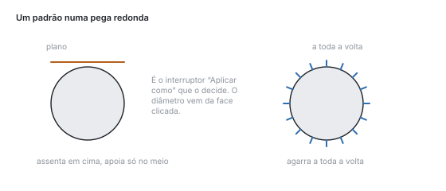
Numa peça redonda o padrão é aplicado a envolver. Aplicado plano, o campo tocaria o cilindro apenas no meio e ficaria no ar nas bordas.
Preencher com grelha substitui o interior de um corpo por uma estrutura — gyroid, favo ou grelha cúbica. Não é o mesmo que o preenchimento do slicer: esta pertence ao modelo, viaja com o ficheiro e deixa-se medir. A espessura de parede da estrutura é verificada contra o bico, tal como na textura.
Comando à distância
Outro programa comanda esta instalação — local, desligável, reversível.
Outro programa no mesmo computador pode comandar o Solidon — através de MCP, a mesma interface com que trabalham o Claude Code e ferramentas semelhantes. E chama exatamente as operações que também estão nos menus.
Está desligada até a ligar. O interruptor está nas definições, juntamente com a porta. Depois disso o Solidon escuta em 127.0.0.1 e só aí: de outro computador a interface não está acessível, nem sequer a partir da rede local.
O que entra é uma transação como qualquer outra. Um Ctrl+Z na janela retira-a, o histórico mostra-a, e na entrada está escrito que veio de fora.
Duas coisas não passam pelo fio, e isso é de propósito: código-fonte OpenSCAD e tudo o que pareça um caminho de ficheiro. Qualquer uma delas significaria que um programa alheio decide o que é executado ou lido neste computador.
Na contraparte, regista-se como servidor com o endereço http://127.0.0.1:8787/mcp.
Que ferramentas existem está escrito neste manual. Cada operação dos capítulos seguintes é uma — com os mesmos parâmetros, os mesmos limites e as mesmas predefinições que a caixa de diálogo mostra. Não há por isso uma lista própria da interface: seria uma segunda versão da mesma informação e, ao fim do segundo mês, diria outra coisa.
Quando algo não resulta
Os casos mais frequentes no início, com aquilo que está por trás deles.
Os casos mais frequentes no início — o que está por trás deles e o que ajuda.
“O modelo não está fechado.” Faltam faces no ficheiro, ou há triângulos virados ao contrário. Em modelos descarregados isso é normal. Reparar, no relatório de verificação, fecha buracos pequenos e vira as faces. Se faltar uma parede inteira, nenhuma reparação a consegue adivinhar — nesse caso o ficheiro está estragado e outra fonte é o caminho mais curto.
Uma combinação falha ou come demasiado. As operações booleanas precisam de corpos de entrada limpos. O Solidon tenta vários métodos por ordem e diz no fim qual deles aguentou. Se disser voxel, o cálculo foi grosseiro e perdeu-se precisão — então primeiro reparar e só depois combinar de novo.
Duas faces ficam exatamente uma sobre a outra. O caso clássico em que uma diferença não retira nada ou em que aparece cintilação. Remédio: deixar o corpo a subtrair sobressair um centésimo de milímetro. Os blocos fazem-no por si.
A peça não cabe na mesa. Dividir automaticamente corta-a até cada pedaço caber e põe pinos de posicionamento nas faces de corte. Se o perfil da impressora tiver um volume de impressão errado, é essa a verdadeira causa — vale a pena ir ver.
O ajuste ficou apertado demais ou solto demais. Não alterar o modelo, medir: imprimir o corpo de teste de tolerâncias, experimentar e introduzir o valor em Calibrar o material. A partir daí vale para qualquer ajuste, também para os de projetos já construídos.
Um passo já não se deixa alterar. Se uma alteração mudasse o número de objetos enquanto passos posteriores trabalham com esses objetos, a avaliação para. É de propósito: os corpos novos não são os antigos, e um passo que fosse parar calado a outro sítio seria pior do que uma mensagem. Retirar os passos posteriores, alterar, voltar a construí-los.
Arredondamento, chanfro ou STEP estão acinzentados. Estas operações precisam do segundo núcleo de construção, com arestas verdadeiras. É uma instalação adicional. Sem ele, tudo o resto continua a correr sem mudanças.
O chat não responde. Precisa de um modelo de linguagem — uma chave própria ou um Ollama local. Modelos pequenos, abaixo de cerca de sete mil milhões de parâmetros, falham nas chamadas de ferramentas, e falham de forma fiável. Tudo o resto funciona sem ele.
Está tudo lento. Durante o trabalho corre a qualidade de rascunho; o cálculo fino só chega na exportação. Com malhas muito grandes ajuda simplificar cedo — o número de triângulos está na árvore de objetos.
Por princípio: nenhum erro no Solidon acaba na constatação. Se não vier junto uma ação com que se possa seguir em frente, isso é um erro do Solidon e merece um relato. O caminho é Ajuda → Enviar um comentário: a captura de ecrã, o registo e, se quiser, a sessão em curso seguem juntos, a pré-visualização mostra tudo antes e um botão envia-o para o suporte. Quem não quiser entregar nada, guarda em vez disso uma pasta no próprio computador, a partir do mesmo diálogo.
Durante a demonstração, o Solidon pergunta por si. Ao fim de meia hora de trabalho — contam apenas os minutos em que fez alguma coisa — um cartão pousa sobre a vista e pergunta como está a correr. Não para nada e espera que olhe. Dar opinião abre o mesmo diálogo que Ajuda → Enviar comentários, com três campos: como se está a desenrascar, o que funcionou bem, o que faltou. Nenhum campo é obrigatório, a pré-visualização mostra tudo antes, e sem o seu clique não sai nada. Não, obrigado vale para sempre; quem deixa simplesmente o cartão, vê-o no máximo três vezes.
Glossário
Os termos que aparecem nos menus e nas mensagens, explicados em poucas palavras.
As palavras que aparecem no Solidon, nos slicers e nos fóruns de impressão — explicadas em poucas linhas.
Malha (mesh) — um corpo como casca de triângulos. STL e OBJ não contêm mais nada: nem círculos, nem cotas, só triângulos.
Fechado (estanque) — a casca não tem nenhum buraco, o dentro e o fora são inequívocos. Só um corpo fechado se deixa combinar e imprimir de forma fiável.
Operação — um passo de trabalho: furar, arredondar, dividir, colocar um bloco. No Solidon a geometria nasce só assim.
Transação — tudo aquilo que um desfazer retira de uma só vez. Uma proposta do chat é exatamente uma, mesmo quando é feita de cinco operações.
Parâmetro — uma cota com nome do projeto, por exemplo largura. As operações podem contar com ela; se o valor mudar, muda tudo o que dela depende.
Bloco — um elemento de construção pronto, vindo da biblioteca, com medidas de uma tabela em vez de medidas de cabeça.
Ajuste — o quão apertadas duas peças assentam uma na outra. A folga necessária vem do perfil de material.
Folga — a distância entre pino e furo, para que os dois se deixem juntar. De menos prende, de mais abana.
Ajuste por interferência — excesso em vez de folga: a peça é prensada e segura por si.
Tolerância — o valor pelo qual uma cota se afasta de propósito da medida nominal, para que o resultado impresso fique certo.
Contração — o plástico encolhe ao arrefecer. É por isso que uma peça impressa fica um pouco mais pequena do que desenhada.
Pé de elefante — a camada mais baixa é premida contra a mesa e alarga para fora. A peça fica em baixo mais larga do que o planeado.
Saliência — uma face que cresce obliquamente para fora. A partir de certo ângulo, a camada por baixo já não tem onde assentar.
Suportes — material impresso junto, por baixo de uma saliência, que depois se parte fora.
Ilha — uma zona de uma camada que não tem nada por baixo. Sem suporte, a impressora imprime ali no ar.
Ponte (vão) — um friso horizontal entre dois pontos de apoio. As pontes curtas conseguem-se sem suporte, as longas vergam.
Bico — a abertura por onde sai o plástico, normalmente 0,4 mm. É ela que limita quão fino pode ser um pormenor.
Largura de extrusão — a largura que um cordão assente atinge. Dois cordões lado a lado são a parede mais fina que faz sentido.
Altura de camada — a espessura de uma camada, em geral 0,2 mm. Mais pequena quer dizer mais fina e mais lenta.
Slicer — o programa que faz do modelo o ficheiro de impressão. O Solidon não é um e não substitui nenhum.
G-Code — a lista de instruções pronta para a impressora. Vem do slicer.
STL — o formato mais divulgado: só triângulos, sem unidade, sem cor.
3MF — o sucessor moderno: com unidade, cores e vários objetos num ficheiro. Onde o slicer o consegue ler, é a melhor escolha.
STEP — um formato com faces e arestas verdadeiras em vez de triângulos. Aquilo que os programas de CAD clássicos trocam entre si.
GLB — o formato dos visualizadores: triângulos com cores, num único ficheiro que qualquer navegador abre. Pensado para mostrar, não para imprimir.
Relatório de verificação — a lista daquilo que dá nas vistas na cena, cada entrada com uma ação que o resolve.
Slot de material — a atribuição de uma face a um material ou a uma cor na impressão multicor.
Por que critérios o Solidon julga
Estas regras estão diante do agente em cada pedido. São a razão por que ele tira um furo para parafuso da tabela em vez de o estimar — e por que pergunta em vez de adivinhar.
Versão: 2
Espessura de parede mínima
Nenhuma parede mais fina do que duas larguras de extrusão. O valor está no perfil da impressora e nunca se escreve como número na operação.
Chanfros em vez de saliências
Acima de 45 graus de saliência, aplicar um chanfro em vez de aceitar suportes. A análise de camadas diz onde está a saliência.
Tolerâncias do perfil do material
Criar os ajustes como par de ajuste e indicar a tolerância como auto:<material>. Um número fixo não sobrevive a nenhuma calibração.
As medidas principais como parâmetros
Cada dimensão que o utilizador possa vir a alterar torna-se um parâmetro de projeto com um nome eloquente. Números soltos nas operações são um beco sem saída.
Sobreposição nas operações booleanas
Em uniões e diferenças, prever sempre 0,01 mm de sobreposição. Faces coincidentes são a causa mais frequente de resultados estragados.
Furos maiores do que a medida nominal
O FDM imprime os furos mais apertados do que o planeado. Alargar o furo com o valor de compensação do perfil do material, não com um número adivinhado.
A primeira camada
Contar com o pé de elefante do perfil do material sempre que a primeira camada tenha de manter a medida.
Resolução do OpenSCAD
No OpenSCAD, definir $fn centralmente. Definido por objeto, os tempos de renderização disparam.
Blocos antes de primitivas
Pesquisar primeiro na biblioteca de blocos, construir depois. Um bloco traz consigo as suas características, os seus limites e os seus testes.
O núcleo próprio antes do OpenSCAD
O que o núcleo B-Rep sabe fazer não se escreve como código OpenSCAD: paralelepípedos e cilindros exatos, operações booleanas precisas, chanfros e boleados. O resultado é mais preciso, continua editável no histórico e não precisa de nenhum programa instalado. O OpenSCAD fica para as formas que não têm nem bloco nem operação do núcleo.
Perguntar antes de adivinhar
Com pedidos ambíguos, usar ask_user. Uma pergunta custa um clique; uma suposição errada custa uma impressão.
Materiais, impressoras, peças normalizadas
Materiais
Todas as cotas em milímetros. “Folga” é a distância que um ajuste móvel recebe, “ajuste por interferência” é a sobremedida de um ajuste fixo. Um perfil que foi calibrado traz valores medidos em vez dos predefinidos.
| Material | Folga | Ajuste por interferência | Acréscimo do furo | Pé de elefante | Encolhimento | calibrado |
|---|---|---|---|---|---|---|
| ABS | 0,25 | -0,06 | 0,20 | 0,15 | 0,7 % | não |
| ASA | 0,25 | -0,06 | 0,20 | 0,15 | 0,6 % | não |
| PETG | 0,25 | -0,05 | 0,20 | 0,20 | 0,4 % | não |
| PETG-CF | 0,25 | -0,05 | 0,20 | 0,15 | 0,3 % | não |
| PLA | 0,20 | -0,05 | 0,15 | 0,15 | 0,2 % | não |
| TPU 95A | 0,35 | -0,10 | 0,30 | 0,25 | 0,2 % | não |
Impressora
A impressora definida decide o que cabe na mesa e a partir de quando uma parede é fina demais — dois caminhos de extrusão são o limite.
| Impressora | Volume de impressão | bico | Altura de camada | Largura de extrusão | fechado |
|---|---|---|---|---|---|
| Allgemeiner FDM-Drucker 220 mm | 220 × 220 × 250 | 0,40 | 0,20 | 0,42 | não |
| Anycubic Kobra 2 | 220 × 220 × 250 | 0,40 | 0,20 | 0,42 | não |
| Bambu Lab A1 | 256 × 256 × 256 | 0,40 | 0,20 | 0,42 | não |
| Bambu Lab A1 mini | 180 × 180 × 180 | 0,40 | 0,20 | 0,42 | não |
| Bambu Lab P1S | 256 × 256 × 256 | 0,40 | 0,20 | 0,42 | sim |
| Bambu Lab X1 Carbon | 256 × 256 × 256 | 0,40 | 0,20 | 0,42 | sim |
| Creality Ender-3 V3 | 220 × 220 × 250 | 0,40 | 0,20 | 0,42 | não |
| Creality K1 | 220 × 220 × 250 | 0,40 | 0,20 | 0,42 | sim |
| Creality K1 Max | 300 × 300 × 300 | 0,40 | 0,20 | 0,42 | sim |
| Elegoo Centauri Carbon 2 | 256 × 256 × 256 | 0,40 | 0,20 | 0,42 | sim |
| Elegoo Neptune 4 | 225 × 225 × 265 | 0,40 | 0,20 | 0,42 | não |
| Elegoo Neptune 4 Plus | 320 × 320 × 385 | 0,40 | 0,20 | 0,42 | não |
| Prusa MINI+ | 180 × 180 × 180 | 0,40 | 0,20 | 0,45 | não |
| Prusa MK4S | 250 × 210 × 220 | 0,40 | 0,20 | 0,45 | não |
| Prusa XL | 360 × 360 × 360 | 0,40 | 0,20 | 0,45 | não |
| Sovol SV06 | 220 × 220 × 250 | 0,40 | 0,20 | 0,42 | não |
Peças normalizadas
De onde vêm as medidas quando um bloco coloca um furo de parafuso ou um alojamento de porca. Nada disso é estimado.
| Tamanho | Cota nominal | Furo de passagem | Furo de núcleo | Cabeça | Passo da rosca |
|---|---|---|---|---|---|
| M2 | 2,0 | 2,4 | 1,60 | 3,8 | 0,40 |
| M2.5 | 2,5 | 2,9 | 2,05 | 4,5 | 0,45 |
| M3 | 3,0 | 3,4 | 2,50 | 5,5 | 0,50 |
| M4 | 4,0 | 4,5 | 3,30 | 7,0 | 0,70 |
| M5 | 5,0 | 5,5 | 4,20 | 8,5 | 0,80 |
| M6 | 6,0 | 6,6 | 5,00 | 10,0 | 1,00 |
| M8 | 8,0 | 9,0 | 6,80 | 13,0 | 1,25 |
Porcas, anilhas, buchas de inserção, ímanes, rolamentos, perfis e tubos estão todos na mesma tabela; os blocos vão lá consultá-los.
As ferramentas do comando à distância
Cada entrada aqui é a mesma operação que está no menu, com os mesmos parâmetros. O que entra torna-se uma transação como qualquer outra: o histórico mostra-a, um Ctrl+Z desfá-la.
Cena
- Dispor na mesa (
arrange_bed) — Dispõe todos os objetos lado a lado na placa de impressão. - Duplicar objeto (
duplicate_object) — Cria mais exemplares do objeto. Todos ficam separados, e a quantidade está na pilha como um número. - Mudar o nome do objeto (
rename_object) — Dá outro nome a um objeto. A geometria fica intocada. - Remover objeto (
delete_object) — Retira um objeto da cena. O passo fica no histórico, portanto um desfazer traz o objeto de volta. - Verificar colisões (
check_collisions) — Assinala sobreposições e o que ultrapassa o volume de impressão.
Reparação
- Reparar (
repair) — Fecha buracos, remove triângulos degenerados e alinha as faces.
Transformação
- Alinhar à característica (
align_to_feature) — Faz coincidir o eixo de um furo, ou uma face, com um segundo elemento. - Cópias em fila ou em círculo (
pattern) — Coloca cópias em fila ou num círculo — um padrão de furos, uma coroa de torres de parafuso, uma fileira de clipes. Um passo com um número dentro, em vez de nove passos iguais na pilha. - Deslocar (
translate_object) — Desloca um objeto os milímetros indicados. - Escalar (
scale_object) — Escala um objeto uniformemente ou por eixo. - Escalar para a cota (
fit_to_size) — Escala um objeto de modo que a sua aresta mais comprida tenha a medida indicada. Para tudo aquilo cujo tamanho se conhece, mas cujo fator seria preciso calcular primeiro. - Espelhar (
mirror_object) — Espelha um objeto em torno de um eixo. Para a contrapeça de uma peça — suporte esquerdo e direito a partir da mesma construção. - Orientar para impressão (
orient_for_print) — Procura a posição com a menor necessidade de suportes. - Pousar na mesa (
place_on_bed) — Pousa o objeto com a face inferior em Z = 0. - Rodar (
rotate_object) — Roda um objeto em torno de um eixo. O ponto de rotação decide em torno de quê: o próprio centro, a origem do projeto ou o centro da mesa.
Formas base
- Criar esfera (
create_sphere) — Cria uma esfera apoiada em Z = 0. - Criar um cilindro (
create_cylinder) — Cria um cilindro em pé sobre Z = 0. - Criar um cilindro exato (
create_brep_cylinder) — Cria um cilindro com arestas reais, assente em Z = 0 — mais tarde podem aplicar-se-lhes chanfros e concordâncias. - Criar um paralelepípedo (
create_box) — Cria um paralelepípedo, centrado em Z = 0 ou apoiado num canto. - Criar um paralelepípedo exato (
create_brep_box) — Cria um paralelepípedo com arestas reais — mais tarde podem aplicar-se-lhes chanfros e concordâncias. - Perno roscado como novo objeto (
thread_exact) — Um perno com rosca exterior helicoidal verdadeira — como corpo exato, que a exportação STEP suporta. Aumentado pela folga e subtraído a um corpo, dá a rosca interior.
Unir e subtrair
- Fundir suavemente (
blend_union) — Une dois corpos com uma transição fluida em vez de uma garganta viva. Para pegas, escoras e tudo o que, impresso, não deve romper no canto interior. - Interseção (
intersect_objects) — Mantém apenas o que ambos os objetos têm em comum. O que for clicado primeiro mantém o nome e o material. - Subtrair (
subtract_objects) — Subtrai o segundo objeto do primeiro. Clique primeiro na peça que deve ficar e depois na que é removida. - Unir (
union_objects) — Funde dois objetos num só. O que for clicado primeiro mantém o nome e o material — o segundo funde-se nele.
Esboço
- Conduzir ao longo de um arco (
sketch_sweep) — Conduz uma secção transversal ao longo de um arco: a começar na vertical, inclinando-se para o lado com o raio do arco — um cotovelo de tubo num só passo. - Cortar bolsa (
sketch_pocket) — Corta uma forma básica como bolsa num corpo exato — da aresta superior na vertical para baixo, passante se desejar. Um clique numa face insere o local previamente. - Estender entre dois contornos (
sketch_loft) — Estende um corpo entre a forma base e a sua cópia reduzida à altura indicada — pirâmide truncada, cone truncado, funil. - Extrudir a forma base (
sketch_extrude) — Puxa uma forma base na vertical até formar um corpo. O contorno vem de um esboço resolvido e entra no núcleo como curva exata — um círculo é mesmo redondo. - Revolver uma secção transversal (
sketch_revolve) — Faz girar uma secção transversal em torno do eixo vertical: um retângulo vira casquilho, um círculo vira anel. O corpo assenta em Z = 0.
Conformação
- Aplicar o ângulo de saída (
draft_faces) — Inclina todas as faces verticais de um corpo exato num ângulo — para a desmoldagem, ou para que uma caixa empilhável empilhe mesmo. - Aplicar um chanfro (
chamfer_edges) — Chanfra as arestas de um corpo exato a 45 graus. - Arredondar (
fillet_edges) — Arredonda as arestas de um corpo exato — geometricamente preciso, porque a aresta é uma curva e não uma sucessão de segmentos. - Deslocar a face (
push_face) — Agarra uma face e desloca-a ao longo da sua normal; as paredes vizinhas crescem com ela. A maneira de alterar uma parede sem procurar a operação que a criou — num STEP importado não há nenhuma. - Esvaziar exatamente (
shell_exact) — Esvazia um corpo exato até uma espessura de parede precisa e deixa o topo aberto — uma caixa a partir de um paralelepípedo, num passo. Para o esvaziamento fechado com respiro existe a operação sobre malha.
Furos
- Abrir furo (
drill_hole) — Abre um furo redondo — a pedido, alargado pela tolerância do material. - Escarear (
countersink_hole) — Alarga a boca de um furo para que a cabeça do parafuso assente à face. - Fazer um furo exato (
drill_brep_hole) — Faz um furo redondo num corpo exato — ele continua exato, e chanfro, arredondamento e a exportação STEP continuam possíveis. - Fechar furo (
plug_hole) — Volta a encher um furo — por exemplo quando uma peça alheia tem um a mais.
Blocos
- Abrir rosca no furo (
insert_printed_thread) — Rosca imprimível como hélice com a crista achatada — não um perfil ISO, porque uma impressora não o resolve de qualquer maneira. - Alojamento de porca (
insert_nut_trap) — Bolsa para uma porca sextavada, inserida de lado ou colocada por baixo, se quiser com furo de parafuso passante. - Alojamento de íman (
insert_magnet_pocket) — Bolsa para um íman redondo, se quiser com camada de cobertura para imprimir por cima e um lábio de retenção na borda. - Bucha de inserção a quente (
insert_heatset_m4) — Furo para uma bucha de inserção a quente, com chanfro de entrada. O diâmetro é deliberadamente justo: o material deve ser deslocado ao inserir. - Conector de encaixe para uma junta (
insert_snap_connector) — Braço elástico e bolsa como par: as metades encaixam em vez de serem coladas. O braço tem um décimo do comprimento de espessura; abaixo de 8 mm não existe, o braço ficaria mais fino do que um bico deposita com carga. - Corpo de teste de tolerâncias (
insert_fit_ladder) — Pinos e furos com folga escalonada. Imprimir uma vez, experimentar, e o valor fica assente — pertence depois ao perfil de material, não ao modelo. - Criar tampa (
create_lid) — Cria, para uma abertura, uma tampa a condizer, com colar. A cavidade é cortada do corpo em vez de ser medida de novo — a folga vem do perfil de material. - Criar tampa de rosca (
screw_lid) — Coloca um gargalo roscado na abertura e cria a tampa de rosca correspondente. Ambas as roscas saem do mesmo passo, a folga vem do perfil de material. - Dobradiça de filme (
insert_living_hinge) — Duas folhas ligadas por um ponto fino. As camadas correm transversalmente à dobra, senão a dobradiça parte-se na primeira abertura. - Escada de espessuras de parede (
insert_wall_ladder) — Paredes de uma a várias larguras de extrusão. Mostra a partir de quando a impressora ainda deposita mesmo material — a base para a espessura mínima de parede. - Furo de parafuso com escareamento (
insert_screw_hole) — Furo de passagem para aparafusar com um parafuso métrico, se quiser com escareamento a 90 graus e folga para a cabeça. Medidas da tabela de peças normalizadas. - Leque de saliências (
insert_overhang_fan) — Superfícies do inclinado ao plano. Mostra a partir de que ângulo esta impressora com este material precisa mesmo de suportes — em vez da regra empírica dos 45 graus. - Ligação de encaixe (
insert_snap_fit) — Braço elástico com gancho, para encaixar duas peças. O braço é pelo menos dez vezes mais comprido do que espesso; de outro modo parte em vez de flectir. - Lingueta de encaixe (
insert_latch) — Ressalto para encaixar, com rampa inclinada para cima e face de retenção reta para baixo — imprime sem suportes e segura à tração. - Lingueta para perfil de alumínio (
insert_profile_tongue) — Um pé em T que entra pela extremidade na ranhura de um perfil de alumínio e lá fica seguro. Colo e cabeça vêm da tabela de peças normalizadas. Para imprimir é melhor deitar a lingueta no sentido da ranhura — de pé, o ombro sob a cabeça é uma saliência. - Nervura de reforço (
insert_rib) — Nervura com saída inclinada: reforça uma parede sem a engrossar. Fica mais fina do que a parede em que assenta, senão marca-se no outro lado. - Passa-cabos com alívio de tensão (
insert_cable_gland) — Passagem para um cabo redondo, com um ponto de aperto por trás. Sem ele, cada puxão no cabo puxa diretamente pela solda. - Pino de posicionamento e furo de ajuste (
insert_dowel) — Pino ou furo em par, para encaixar duas peças. A folga vem do perfil de material, para que uma calibração posterior alcance também projetos antigos. - Suporte de parede (
insert_wall_mount) — Placa traseira com furos para parafusos e um apoio saliente para a frente. Os furos são passantes, retirados da tabela de peças normalizadas. - Suspensão em buraco de fechadura (
insert_keyhole) — Recorte em forma de buraco de fechadura: a cabeça passa pela extremidade redonda, a haste segura na ranhura.
Separar e ajustar
- Compensar o pé de elefante (
compensate_first_layer) — Recolhe as primeiras camadas na medida em que elas alastram durante a impressão. O valor vem do perfil de material. - Criar peça de ensaio (
test_piece) — Recorta um cubo à volta de um ponto, para o imprimir e experimentar — dois minutos em vez de duas horas. - Definir material (
set_material) — Dá a este corpo um material próprio. As tolerâncias, a contração e o pé de elefante passam a ser calculados com ele e não com o do projeto. - Esvaziar (
hollow_object) — Esvazia um objeto e coloca respiros. Poupa material e tempo; a espessura de parede mantém-se dentro do que a grelha permite. - Separar (
split_pinned) — Separa um objeto num plano, com pinos na face de corte se quiser. A folga vem do perfil do material; zero pinos significa: apenas cortar. - Separar ao longo de uma linha desenhada (
split_line) — Separa um objeto ao longo de uma linha desenhada na vista e, se quiser, coloca pinos de encaixe na face de corte.
Importação
- Carregar modelo (
load) — Lê um ficheiro de modelo, converte-o para milímetros e limpa-o. Um conjunto 3MF chega como vários objetos, não como um aglomerado. - Carregar STEP (
load_step) — Lê um ficheiro STEP como corpo exato. O STEP traz a sua própria unidade — a pergunta pela unidade não surge. - Extrudir um desenho (
load_outline) — Lê um desenho SVG ou DXF e dá-lhe uma altura. Contornos interiores tornam-se furos.
Cor
- Atribuir slot (
assign_slot) — Coloca o objeto inteiro num slot de material. Uma peça torna-se multicolorida unindo corpos com atribuições diferentes. - Converter as cores em slots (
slots_from_texture) — Converte a textura de um objeto para o número de filamentos carregados e guarda o resultado como slots de material. - Pintar (
paint_slot) — Pinta um slot de material na face em torno de um ponto. O pincel percorre a superfície e detém-se nas arestas, em vez de pintar ao virar da esquina.
Inscrição
- Aplicar texto (
label_text) — Coloca texto em relevo ou gravado numa face. O tipo de letra é tratado como contorno, não como imagem — as arestas ficam limpas em qualquer tamanho. - Inscrição como corpo (
create_label) — Cria uma inscrição como objeto próprio — para a impressão a duas cores com dois ficheiros e para letras que se colam por cima.
Superfície superior
- Aplicar relevo (
displace_image) — Transforma o brilho de uma imagem em altura na superfície. Para veios, gravações e brasões — tudo aquilo para que um esboço não serve. - Aplicar textura (
apply_texture) — Grava um padrão numa face como geometria real — moletado para agarrar, favo ou nervura pelo aspeto. O que o slicer recebe é aquilo que se vê. - Preencher com grelha (
lattice_fill) — Preenche a cavidade de um corpo esvaziado com uma estrutura em grelha, como geometria verdadeira. Ela viaja dentro do 3MF e é a mesma, seja quem for a cortar a peça em camadas.
Malha
- Converter numa malha (
brep_to_mesh) — Converte um corpo exato numa malha de triângulos. Não há caminho de volta — as arestas desaparecem. - Dar uma pose (
pose_armature) — Dobra um corpo em torno de um esqueleto. Uma pose, não um movimento — o que se imprime é um estado. - Fechar superfície aberta (
thicken) — Dá uma parede a uma superfície aberta e faz dela um corpo. A saída para uma malha que chega como superfície em vez de volume. - Modelar (
sculpt_strokes) — Adiciona e retira material com o pincel. Toda a sessão é um passo do histórico e continua editável, por muitos traços que tenha. - Reduzir triângulos (
decimate_mesh) — Reduz o número de triângulos. O maior desvio face à superfície original é medido e comunicado. - Refinar as arestas (
remesh_mesh) — Divide as arestas longas até a malha ficar uniforme. A forma mantém-se exata. - Suavizar (
smooth_mesh) — Tira a rugosidade de uma superfície sem encolher o corpo. Para malhas geradas com degraus. - Subdividir a superfície (
subdivide_surface) — Transforma uma superfície facetada numa curva: os pontos novos não são colocados na faceta, mas sobre a curvatura que ela representa. As arestas vivas mantêm-se vivas. - Uniformizar os triângulos (
remesh_uniform) — Traz todos os triângulos aproximadamente ao mesmo tamanho — os grosseiros são divididos, os desnecessariamente finos agrupados. O passo que antecede a modelação à mão.
Leitura, parâmetros, desfazer
Estas ferramentas não estão em nenhum menu — são a informação de que uma contraparte precisa antes de alterar seja o que for.
- Desfazer uma transação (
undo_transaction) — Desfaça uma transação do histórico. - Criar parâmetro (
add_parameter) — Crie uma cota principal como parâmetro do projeto, em vez de defini-la como número. - Alterar um parâmetro (
set_parameter) — Altera o valor de um parâmetro de projeto existente. - Criar um ajuste (
add_fit) — Crie um par de ajuste. A tolerância vem do perfil de material. - Ler o relatório de verificação (
read_report) — Leia o relatório de verificação, opcionalmente só a partir de uma gravidade. - Procurar um bloco (
find_part) — Procura um bloco adequado antes de compores tu mesmo a geometria. - Ler a ficha (
read_digest) — Leia de novo a ficha da cena — com as características e IDs que os seus passos anteriores criaram. - Consultar medidas normalizadas (
read_standard) — Consulta as cotas das peças normalizadas: furo de núcleo, furo passante, abertura de chave e mais — em vez de as adivinhar. - Ler uma análise (
read_analysis) — Leia uma análise: imprimibilidade (saliências, ilhas, pontes), estimativa de tempo e material, aconselhamento de configurações ou procura de orientação. Só leitura, a origem é sempre indicada. - Mudar impressora e material (
set_print_target) — Troca a impressora ou o material do projeto. As tolerâncias são referências ao perfil de material e convertem-se com ele.
O que não sai pela linha
Duas operações estão bloqueadas, ambas pelo mesmo motivo: um programa alheio não deve determinar o que se executa ou se lê neste computador.
- Pergunta ao utilizador (
ask_user) - Anexar um corpo OpenSCAD (
create_from_scad)
Além disso, é recusado todo o argumento que pareça um caminho de ficheiro. Ambos continuam utilizáveis na janela; fechado está apenas o caminho a partir de fora.
Mensagens na íntegra
O que a aplicação diz quando algo não resulta — palavra por palavra, para que se possa consultar. Aqui um erro nunca acaba em “falhou”: a cada mensagem pertence pelo menos um caminho em frente.
| Mensagem | O que ajuda |
|---|---|
| A entrada não era utilizável assim. | Corrigir a entrada, Cancelar |
| A geometria não permitiu a operação. | Reparar e tentar de novo, Mostrar os pontos, Cancelar |
| A geração de malha não entregou nenhum modelo. | Cancelar |
| A indicação não é inequívoca. | Selecionar, Cancelar |
| A operação booleana falhou em todos os níveis. | Reparar e tentar de novo, Forçar o nível de voxels, Mostrar os pontos, Cancelar |
| Duas condições contradizem-se. | Corrigir a entrada, Cancelar |
| Esta chave de licença não é utilizável. | Corrigir a entrada, Comprar o Solidon |
| Esta operação só trabalha sobre um corpo exato. | Cancelar |
| Este código-fonte OpenSCAD estende a mão para fora. | Remover os ficheiros incluídos., Ver o código-fonte. |
| Este modelo é grande demais para um mapa de análise. | Reduzir triângulos., Cancelar |
| Não foi possível determinar a unidade do ficheiro. | Corrigir a entrada, Cancelar |
| Não foi possível escrever o ficheiro. | Tentar de novo, Escolher outro local, Corrigir a entrada, Cancelar |
| O OpenSCAD não está instalado nesta máquina. | Instalar o OpenSCAD …, Utilizar antes um bloco. |
| O modelo de linguagem demorou demasiado. | Programas opcionais …, Tentar de novo, Cancelar |
| O modelo de linguagem não respondeu. | Programas opcionais …, Tentar de novo, Cancelar |
| O modelo está aberto em vários pontos. | Reparar e tentar de novo, Mostrar os pontos, Cancelar |
| O núcleo B-Rep não está instalado neste computador. | Programas opcionais …, Cancelar |
| O objeto não cabe no volume de impressão. | Dividir o modelo, Reduzir para o volume de impressão, Escolher outro perfil de impressora, Cancelar |
| O período de teste terminou — para isso o Solidon precisa de uma chave de licença. | Inserir chave de licença, Comprar o Solidon, Cancelar |
| Ocorreu um erro inesperado no programa. | Criar um relato de erro, Mostrar os detalhes, Cancelar |
| Um programa externo não respondeu. | Programas opcionais …, Tentar de novo, Cancelar |
| Um valor está fora do intervalo admissível. | Corrigir a entrada, Cancelar |
A linha por baixo, na janela, diz o motivo deste caso concreto — que parede é fina demais, que valor está fora do intervalo, que ficheiro estava em causa.
Cena
Dispor na mesa (arrange_bed)
Dispõe todos os objetos lado a lado na placa de impressão.
Objetos: 0 → -1 · reversível · determinista · Atalho Ctrl+Shift+O
| Parâmetros | Unidade | Predefinição | Intervalo | Significado |
|---|---|---|---|---|
Distância spacing | mm | 5 | 0 … 100 | Ar entre as peças. O suficiente para que um pé de elefante não funda duas delas pela borda. |
Placas de impressão plates | 1 | 1 … 12 | O que não couber numa placa passa para a seguinte. | |
Separar por filamento by_material | desligado | Coloca peças de filamentos diferentes em placas diferentes. Dois filamentos numa placa custam, por cada camada partilhada, uma troca e uma purga. |
Duplicar objeto (duplicate_object)
Cria mais exemplares do objeto. Todos ficam separados, e a quantidade está na pilha como um número.
Objetos: 1 → -1 · reversível · determinista · Atalho Ctrl+D
| Parâmetros | Predefinição | Intervalo | Significado |
|---|---|---|---|
Quantidade count | 2 | 1 … 100 | Quantos exemplares há depois. Dois é uma cópia — a quantidade fica assim na pilha e não no nome do ficheiro. |
Nome da cópia name | Deixar vazio deriva o nome do original. |
Mudar o nome do objeto (rename_object)
Dá outro nome a um objeto. A geometria fica intocada.
Objetos: 1 → 1 · reversível · determinista · Atalho F2
| Parâmetros | Predefinição | Significado |
|---|---|---|
Nome name | necessário | Novo nome do objeto. |
Remover objeto (delete_object)
Retira um objeto da cena. O passo fica no histórico, portanto um desfazer traz o objeto de volta.
Objetos: 1 → 0 · reversível · determinista · Atalho Del
Verificar colisões (check_collisions)
Assinala sobreposições e o que ultrapassa o volume de impressão.
Objetos: 0 → -1 · reversível · determinista
| Parâmetros | Unidade | Predefinição | Intervalo | Significado |
|---|---|---|---|---|
Distância mínima clearance | mm | 0 | 0 … 50 | A partir de quando duas peças contam como próximas demais. Zero comunica apenas sobreposições reais; um valor acima disso comunica também os pontos apertados. |
Reparação
Reparar (repair)
Fecha buracos, remove triângulos degenerados e alinha as faces.
Objetos: 1 → 1 · reversível · determinista · Atalho Ctrl+Shift+R · Aplica-se a: Aresta aberta
| Parâmetros | Predefinição | Significado |
|---|---|---|
Fechar os pontos abertos fill_holes | ligado | Fecha buracos pequenos. Não substitui uma parede em falta. |
A soldar os pontos weld | ligado | Junta pontos que estão praticamente sobrepostos. A razão mais frequente para uma malha parecer ser feita de várias peças. |
Remover os triângulos degenerados degenerate | ligado | Triângulos sem área. Atrapalham qualquer cálculo posterior e não trazem nada. |
Unificação das normais normals | ligado | Determina onde é o lado de fora. Sem isso, as faces aparecem escuras ou desaparecem. |
Eliminar fragmentos soltos small_components | desligado | Desligado por predefinição: só é eliminado aquilo que se mandar eliminar expressamente. |
Resolver as autointerseções self_intersections | desligado | Recalcula as faces que se atravessam mutuamente. Ajuda em malhas geradas e custa precisão — por isso desligado até fazer falta. |
Transformação
Alinhar à característica (align_to_feature)
Faz coincidir o eixo de um furo, ou uma face, com um segundo elemento.
Objetos: 1 → 1 · reversível · determinista · Aplica-se a: Furo, Face
| Parâmetros | Predefinição | Significado |
|---|---|---|
Característica feature | Furo ou face no objeto movido. Um clique na janela preenche-o. | |
Destino target | Característica à qual se alinha, como obj_2:hole_1. | |
Ao contrário flip | desligado | Roda o resultado 180 graus, quando era o outro lado que estava em causa. |
Cópias em fila ou em círculo (pattern)
Coloca cópias em fila ou num círculo — um padrão de furos, uma coroa de torres de parafuso, uma fileira de clipes. Um passo com um número dentro, em vez de nove passos iguais na pilha.
Objetos: 1 → -1 · reversível · determinista
| Parâmetros | Unidade | Predefinição | Intervalo | Significado |
|---|---|---|---|---|
Tipo kind | linear | linear, circular | Linear alinha as cópias ao longo de uma direção, circular distribui-as em torno de um eixo. Uma operação, dois tipos — não duas entradas. | |
Quantidade count | 4 | 1 … 100 | Quantos exemplares há depois, contando o original. Um único não é um padrão. | |
Distância spacing | mm | 20 | 0 … | De centro a centro, no tipo linear. No circular conta o ângulo. Aplica-se quando Tipo = linear. |
Ângulo angle | ° | 360 | -360 … 360 | Por que arco as cópias são distribuídas. Os 360 graus completos fecham a coroa sem que duas cópias caiam uma sobre a outra. Aplica-se quando Tipo = circular. |
Eixo axis | z | x, y, z | Em torno de que eixo corre a coroa. Ele passa pela origem. Aplica-se quando Tipo = circular. | |
Direção X dx | 1 | Direção da série linear. Sem direção, todas as cópias ficavam umas por cima das outras. Aplica-se quando Tipo = linear. | ||
Direção Y dy | 0 | Segundo eixo da direção — ver Direção X. Aplica-se quando Tipo = linear. | ||
Direção Z dz | 0 | Terceiro eixo da direção — ver Direção X. Aplica-se quando Tipo = linear. |
Deslocar (translate_object)
Desloca um objeto os milímetros indicados.
Objetos: 1 → 1 · reversível · determinista · Atalho Ctrl+T
| Parâmetros | Unidade | Predefinição | Significado |
|---|---|---|---|
Deslocamento X dx | mm | 0 | Em quanto se desloca, não para onde. Positivo vai para a direita. |
Deslocamento Y dy | mm | 0 | O positivo vai para trás. |
Deslocamento Z dz | mm | 0 | O positivo vai para cima. Para pousar a peça existe Pousar na mesa. |
Escalar (scale_object)
Escala um objeto uniformemente ou por eixo.
Objetos: 1 → 1 · reversível · determinista
| Parâmetros | Predefinição | Intervalo | Significado |
|---|---|---|---|
Fator factor | 1 | 0,001 … 1000 | Escala uniforme. Os valores por eixo estão atrás. Quando a medida de destino é conhecida, “Ajustar à medida” é o caminho mais curto. |
Fator X fx | 0 | 0 … | Só este eixo. Zero significa: vale o fator uniforme acima. |
Fator Y fy | 0 | 0 … | Zero significa: vale o fator uniforme acima. |
Fator Z fz | 0 | 0 … | Zero significa: vale o fator uniforme acima. Escalar por eixo distorce os furos — ficam ovais. |
Ponto de referência about | centre | centre, origin, bed | O ponto que fica no lugar: centro de massa, origem ou área de assentamento. |
Escalar para a cota (fit_to_size)
Escala um objeto de modo que a sua aresta mais comprida tenha a medida indicada. Para tudo aquilo cujo tamanho se conhece, mas cujo fator seria preciso calcular primeiro.
Objetos: 1 → 1 · reversível · determinista
| Parâmetros | Unidade | Predefinição | Intervalo | Significado |
|---|---|---|---|---|
Aresta mais longa largest | mm | 100 | 0,1 … 1000 | A aresta mais comprida cresce até esta cota; as outras seguem na proporção. |
Referência about | centre | centre, origin, bed | Que ponto fica parado durante a escala. |
Espelhar (mirror_object)
Espelha um objeto em torno de um eixo. Para a contrapeça de uma peça — suporte esquerdo e direito a partir da mesma construção.
Objetos: 1 → 1 · reversível · determinista · Atalho Ctrl+M
| Parâmetros | Predefinição | Intervalo | Significado |
|---|---|---|---|
Eixo axis | x | x, y, z | O eixo em que se espelha — a outra mão da mesma peça. |
Ponto de referência about | centre | centre, origin, bed | Onde fica o plano de espelho: centro de massa, origem ou área de apoio. |
Orientar para impressão (orient_for_print)
Procura a posição com a menor necessidade de suportes.
Objetos: 1 → 1 · reversível · com semente
| Parâmetros | Predefinição | Intervalo | Significado |
|---|---|---|---|
Procurar a fundo thorough | ligado | Percorre centenas de posições com a análise de camadas. Desligado significa: heurística rápida sobre as faces. | |
Candidatos candidates | 200 | 8 … 2000 | Quantas posições são calculadas. Mais encontra melhorias mais finas e demora proporcionalmente mais. Aplica-se quando Procurar a fundo está marcado. |
Pousar na mesa (place_on_bed)
Pousa o objeto com a face inferior em Z = 0.
Objetos: 1 → 1 · reversível · determinista · Atalho Ctrl+Shift+B
Rodar (rotate_object)
Roda um objeto em torno de um eixo. O ponto de rotação decide em torno de quê: o próprio centro, a origem do projeto ou o centro da mesa.
Objetos: 1 → 1 · reversível · determinista · Atalho Ctrl+R
| Parâmetros | Unidade | Predefinição | Intervalo | Significado |
|---|---|---|---|---|
Eixo axis | z | x, y, z | Em torno de que eixo se roda. Z gira sobre a mesa, X e Y inclinam a peça. | |
Ângulo angle | ° | 90 | -360 … 360 | Ângulo de rotação no sentido contrário aos ponteiros do relógio, visto da ponta do eixo. |
Ponto de rotação about | centre | centre, origin, bed | Centro de massa do objeto, origem do mundo ou área de apoio. |
Formas base
Anexar um corpo OpenSCAD (create_from_scad)
Constrói um corpo a partir de código-fonte OpenSCAD. O recurso para formas para as quais não há bloco — precisa de uma instalação e é verificado antes.
Quando não: A última escolha, não a primeira. O que um bloco ou o núcleo exato consegue não se escreve como código-fonte — o resultado é mais preciso, continua alterável no histórico e não precisa de um OpenSCAD instalado.
Objetos: 0 → 1 · reversível · determinista
| Parâmetros | Significado |
|---|---|
Código-fonte source | Código-fonte OpenSCAD. É verificado antes de correr. |
Nome name | Como se chama o objeto na árvore. Vazio significa: o Solidon atribui um nome. |
Criar esfera (create_sphere)
Cria uma esfera apoiada em Z = 0.
Objetos: 0 → 1 · reversível · determinista
| Parâmetros | Unidade | Predefinição | Intervalo | Significado |
|---|---|---|---|---|
Diâmetro diameter | mm | 20 | 0,1 … 1000 | Diâmetro exterior. A esfera pousa em Z = 0. |
Segmentos segments | 32 | 8 … 128 | Mais segmentos significa mais redondo e mais lento. | |
Nome name | Como se chama o objeto na árvore. Vazio significa: o Solidon atribui um nome. |
Criar um cilindro (create_cylinder)
Cria um cilindro em pé sobre Z = 0.
Objetos: 0 → 1 · reversível · determinista
| Parâmetros | Unidade | Predefinição | Intervalo | Significado |
|---|---|---|---|---|
Diâmetro diameter | mm | 20 | 0,1 … 1000 | Diâmetro exterior. O cilindro assenta em Z = 0. |
Altura height | mm | 20 | 0,1 … 1000 | Altura para cima, a partir da face de apoio. |
Segmentos segments | 48 | 8 … 256 | Mais segmentos significa mais redondo e mais lento. | |
Nome name | Como se chama o objeto na árvore. Vazio significa: o Solidon atribui um nome. |
Criar um cilindro exato (create_brep_cylinder)
Cria um cilindro com arestas reais, assente em Z = 0 — mais tarde podem aplicar-se-lhes chanfros e concordâncias.
Objetos: 0 → 1 · reversível · determinista
| Parâmetros | Unidade | Predefinição | Intervalo | Significado |
|---|---|---|---|---|
Diâmetro diameter | mm | 20 | 0,1 … 1000 | Diâmetro exterior. Como corpo exato, é realmente redondo, não poligonal. |
Altura height | mm | 20 | 0,1 … 1000 | Altura para cima, a partir da face de apoio. |
Nome name | Como se chama o objeto na árvore. Vazio significa: o Solidon atribui um nome. |
Criar um paralelepípedo (create_box)
Cria um paralelepípedo, centrado em Z = 0 ou apoiado num canto.
Objetos: 0 → 1 · reversível · determinista
| Parâmetros | Unidade | Predefinição | Intervalo | Significado |
|---|---|---|---|---|
Largura width | mm | 40 | 0,1 … 1000 | Extensão em X. Pode ser uma expressão, por exemplo =@breite*2. |
Profundidade depth | mm | 30 | 0,1 … 1000 | Extensão em Y. |
Altura height | mm | 10 | 0,1 … 1000 | Extensão em Z, ou seja, para cima. |
Ponto de referência anchor | centre | centre, corner | Centrado na origem ou com o canto sobre ela. | |
Nome name | Como se chama o objeto na árvore. Vazio significa: o Solidon atribui um nome. |
Criar um paralelepípedo exato (create_brep_box)
Cria um paralelepípedo com arestas reais — mais tarde podem aplicar-se-lhes chanfros e concordâncias.
Objetos: 0 → 1 · reversível · determinista
| Parâmetros | Unidade | Predefinição | Intervalo | Significado |
|---|---|---|---|---|
Largura width | mm | 40 | 0,1 … 1000 | Extensão em X. |
Profundidade depth | mm | 30 | 0,1 … 1000 | Extensão em Y. |
Altura height | mm | 20 | 0,1 … 1000 | Extensão em Z, ou seja, para cima. |
Nome name | Como se chama o objeto na árvore. Vazio significa: o Solidon atribui um nome. |
Perno roscado como novo objeto (thread_exact)
Um perno com rosca exterior helicoidal verdadeira — como corpo exato, que a exportação STEP suporta. Aumentado pela folga e subtraído a um corpo, dá a rosca interior.
Objetos: 0 → 1 · reversível · determinista
| Parâmetros | Unidade | Predefinição | Intervalo | Significado |
|---|---|---|---|---|
Diâmetro nominal diameter | mm | 10 | 2 … 100 | Diâmetro exterior sobre as cristas da rosca — a cota a que M10 se refere. |
Passo da rosca pitch | mm | 1,5 | 0,25 … 8 | Ganho de altura por volta. As roscas impressas querem um passo grosseiro — abaixo de um milímetro quase nenhuma impressora imprime limpo. |
Comprimento length | mm | 12 | 1 … 500 | Comprimento da rosca de Z = 0 para cima, pelo menos dois passos. |
Nome name | Como se chama o objeto na árvore. Vazio significa: o Solidon atribui um nome. |
Unir e subtrair
Fundir suavemente (blend_union)
Une dois corpos com uma transição fluida em vez de uma garganta viva. Para pegas, escoras e tudo o que, impresso, não deve romper no canto interior.
Quando não: Não numa peça cujas medidas contam: o resultado nasce sobre uma grelha e as arestas vivas dos corpos de partida saem mais suaves. Onde há um ajuste, pertence a união comum.
Objetos: 2 → 1 · reversível · determinista
| Parâmetros | Unidade | Predefinição | Intervalo | Significado |
|---|---|---|---|---|
Transição radius | mm | 3 | 0 … 50 | Quanto a garganta entre os dois corpos se enche. Zero dá a união comum. Vence uma folga a partir de cerca de três vezes a sua largura. |
Passo da grelha grid | mm | 1 | 0,05 … 10 | Com que finura se calcula. Menor significa mais exato e bem mais lento — as arestas abaixo deste passo perdem-se. |
Interseção (intersect_objects)
Mantém apenas o que ambos os objetos têm em comum. O que for clicado primeiro mantém o nome e o material.
Objetos: 2 → 1 · reversível · com semente · Atalho Ctrl+Shift+X
Subtrair (subtract_objects)
Subtrai o segundo objeto do primeiro. Clique primeiro na peça que deve ficar e depois na que é removida.
Objetos: 2 → 1 · reversível · com semente · Atalho Ctrl+Shift+A
Unir (union_objects)
Funde dois objetos num só. O que for clicado primeiro mantém o nome e o material — o segundo funde-se nele.
Objetos: 2 → 1 · reversível · com semente · Atalho Ctrl+Shift+V
Esboço
Conduzir ao longo de um arco (sketch_sweep)
Conduz uma secção transversal ao longo de um arco: a começar na vertical, inclinando-se para o lado com o raio do arco — um cotovelo de tubo num só passo.
Objetos: 0 → 1 · reversível · determinista
| Parâmetros | Unidade | Predefinição | Intervalo | Significado |
|---|---|---|---|---|
Forma base shape | circle | rectangle, slot, circle, polygon | Retângulo, furo oblongo, círculo ou polígono — as cotas ficam por baixo. | |
Comprimento length | mm | 10 | 0,1 … 1000 | Comprimento em X. No círculo e no polígono é o diâmetro, no furo oblongo é o comprimento total sobre as extremidades redondas. |
Largura width | mm | 10 | 0,1 … 1000 | Largura em Y. Sem efeito no círculo e no polígono. Aplica-se quando Forma base = rectangle, slot. |
Raio de curvatura bend_radius | mm | 20 | 0,1 … 1000 | Raio do caminho que a secção transversal segue. Tem de ser maior do que metade da secção transversal, senão o lado interior dobra. |
Ângulo de curvatura bend_angle | ° | 90 | 1 … 180 | Até onde vai a curva — 90 graus é uma curva de tubo em ângulo reto. |
Nome name | Como se chama o objeto na árvore. Vazio significa: o Solidon atribui um nome. | |||
Cantos corners | 6 | 3 … 64 | Número de cantos, só no polígono. Aplica-se quando Forma base = polygon. | |
Esboço sketch | Um esboço desenhado em vez da forma base. Vazio quer dizer: vale a forma base acima. |
Cortar bolsa (sketch_pocket)
Corta uma forma básica como bolsa num corpo exato — da aresta superior na vertical para baixo, passante se desejar. Um clique numa face insere o local previamente.
Objetos: 1 → 1 · reversível · determinista · Aplica-se a: Face
| Parâmetros | Unidade | Predefinição | Intervalo | Significado |
|---|---|---|---|---|
Forma base shape | rectangle | rectangle, slot, circle, polygon | Retângulo, furo oblongo, círculo ou polígono — as cotas ficam por baixo. | |
Comprimento length | mm | 20 | 0,1 … 1000 | Comprimento em X. No círculo e no polígono é o diâmetro, no furo oblongo é o comprimento total sobre as extremidades redondas. |
Largura width | mm | 10 | 0,1 … 1000 | Largura em Y. Sem efeito no círculo e no polígono. Aplica-se quando Forma base = rectangle, slot. |
Profundidade depth | mm | 5 | 0,1 … 1000 | Quão fundo a bolsa corta, a partir da sua aresta superior. Aplica-se quando Passante não está marcado. |
Passante through | desligado | Corta através de toda a altura do corpo — a profundidade deixa de contar. | ||
X x | mm | 0 | -1000 … 1000 | Centro da cavidade em X. Uma face clicada preenche a posição sozinha. |
Y y | mm | 0 | -1000 … 1000 | Centro da cavidade em Y. Uma face clicada preenche a posição sozinha. |
Aresta superior z | mm | 0 | -1000 … 1000 | Onde a bolsa começa em cima. Zero significa: na face superior do corpo. |
Cantos corners | 6 | 3 … 64 | Número de cantos, só no polígono. Aplica-se quando Forma base = polygon. | |
Esboço sketch | Um esboço desenhado em vez da forma base. Vazio quer dizer: vale a forma base acima. |
Estender entre dois contornos (sketch_loft)
Estende um corpo entre a forma base e a sua cópia reduzida à altura indicada — pirâmide truncada, cone truncado, funil.
Objetos: 0 → 1 · reversível · determinista
| Parâmetros | Unidade | Predefinição | Intervalo | Significado |
|---|---|---|---|---|
Forma base shape | rectangle | rectangle, slot, circle, polygon | Retângulo, furo oblongo, círculo ou polígono — as cotas ficam por baixo. | |
Comprimento length | mm | 40 | 0,1 … 1000 | Comprimento em X. No círculo e no polígono é o diâmetro, no furo oblongo é o comprimento total sobre as extremidades redondas. |
Largura width | mm | 20 | 0,1 … 1000 | Largura em Y. Sem efeito no círculo e no polígono. Aplica-se quando Forma base = rectangle, slot. |
Altura height | mm | 20 | 0,1 … 1000 | Distância entre o contorno inferior e o superior. |
Conicidade top_scale | 0,5 | 0,05 … 2 | Tamanho do contorno de cima em relação ao de baixo. 0,5 reduz-o a metade — uma pirâmide ou um cone truncados; acima de 1 alarga para cima. | |
Nome name | Como se chama o objeto na árvore. Vazio significa: o Solidon atribui um nome. | |||
Cantos corners | 6 | 3 … 64 | Número de cantos, só no polígono. Aplica-se quando Forma base = polygon. |
Extrudir a forma base (sketch_extrude)
Puxa uma forma base na vertical até formar um corpo. O contorno vem de um esboço resolvido e entra no núcleo como curva exata — um círculo é mesmo redondo.
Objetos: 0 → 1 · reversível · determinista
| Parâmetros | Unidade | Predefinição | Intervalo | Significado |
|---|---|---|---|---|
Forma base shape | rectangle | rectangle, slot, circle, polygon | Retângulo, furo oblongo, círculo ou polígono — as cotas ficam por baixo. | |
Comprimento length | mm | 40 | 0,1 … 1000 | Comprimento em X. No círculo e no polígono é o diâmetro, no furo oblongo é o comprimento total sobre as extremidades redondas. |
Largura width | mm | 20 | 0,1 … 1000 | Largura em Y. Sem efeito no círculo e no polígono. Aplica-se quando Forma base = rectangle, slot. |
Altura height | mm | 10 | 0,1 … 1000 | Até que altura o corpo é puxado, de Z = 0 para cima. |
Cantos corners | 6 | 3 … 64 | Número de cantos, só no polígono. Aplica-se quando Forma base = polygon. | |
Região region | 0 | 0 … 64 | Num esboço com vários contornos separados: qual deles. Zero significa todos — são unidos num único corpo. | |
Até à face up_to | Em vez da altura: até ao nível desta face. Vazio significa que vale a altura acima. Uma face clicada inscreve-se sozinha. | |||
Nome name | Como se chama o objeto na árvore. Vazio significa: o Solidon atribui um nome. | |||
Esboço sketch | Um esboço desenhado em vez da forma base. Vazio quer dizer: vale a forma base acima. |
Revolver uma secção transversal (sketch_revolve)
Faz girar uma secção transversal em torno do eixo vertical: um retângulo vira casquilho, um círculo vira anel. O corpo assenta em Z = 0.
Objetos: 0 → 1 · reversível · determinista
| Parâmetros | Unidade | Predefinição | Intervalo | Significado |
|---|---|---|---|---|
Forma base shape | rectangle | rectangle, slot, circle, polygon | Retângulo, furo oblongo, círculo ou polígono — as cotas ficam por baixo. | |
Comprimento length | mm | 5 | 0,1 … 1000 | Extensão da secção transversal a partir do eixo. No círculo e no polígono, é o diâmetro. |
Largura width | mm | 8 | 0,1 … 1000 | Altura da secção ao longo do eixo. Sem efeito no círculo e no polígono. Aplica-se quando Forma base = rectangle, slot. |
Distância ao eixo offset | mm | 10 | 0 … 1000 | Distância entre a aresta interior da secção transversal e o eixo de rotação. Zero torna o corpo maciço até ao centro. |
Ângulo angle | ° | 360 | 1 … 360 | Quanto se roda em torno do eixo. 360 fecha o corpo. |
Nome name | Como se chama o objeto na árvore. Vazio significa: o Solidon atribui um nome. | |||
Cantos corners | 6 | 3 … 64 | Número de cantos, só no polígono. Aplica-se quando Forma base = polygon. | |
Esboço sketch | Um esboço desenhado como secção transversal, usado tal como foi desenhado: x é a distância ao eixo, y a altura — a distância indicada acima deixa então de valer. |
Conformação
Aplicar o ângulo de saída (draft_faces)
Inclina todas as faces verticais de um corpo exato num ângulo — para a desmoldagem, ou para que uma caixa empilhável empilhe mesmo.
Objetos: 1 → 1 · reversível · determinista
| Parâmetros | Unidade | Predefinição | Intervalo | Significado |
|---|---|---|---|---|
Ângulo angle | ° | 2 | 0,1 … 30 | Em quantos graus as faces verticais são inclinadas. A base mantém a sua medida; para cima o corpo estreita. |
Aplicar um chanfro (chamfer_edges)
Chanfra as arestas de um corpo exato a 45 graus.
Objetos: 1 → 1 · reversível · determinista
| Parâmetros | Unidade | Predefinição | Intervalo | Significado |
|---|---|---|---|---|
Largura distance | mm | 1 | 0,01 … 100 | Quanto o chanfro recua a aresta, em cada uma das duas faces. |
Arestas edges | vertical | all, vertical, horizontal, top, bottom | Que arestas estão em causa — verticais, horizontais, de cima, de baixo ou todas. |
Arredondar (fillet_edges)
Arredonda as arestas de um corpo exato — geometricamente preciso, porque a aresta é uma curva e não uma sucessão de segmentos.
Objetos: 1 → 1 · reversível · determinista
| Parâmetros | Unidade | Predefinição | Intervalo | Significado |
|---|---|---|---|---|
Raio radius | mm | 2 | 0,01 … 100 | Raio do arredondamento. Maior do que o material adjacente mais fino não resulta — o núcleo deixa de ter espaço. |
Arestas edges | vertical | all, vertical, horizontal, top, bottom | Que arestas estão em causa — verticais, horizontais, de cima, de baixo ou todas. |
Deslocar a face (push_face)
Agarra uma face e desloca-a ao longo da sua normal; as paredes vizinhas crescem com ela. A maneira de alterar uma parede sem procurar a operação que a criou — num STEP importado não há nenhuma.
Objetos: 1 → 1 · reversível · determinista · Aplica-se a: Face
| Parâmetros | Unidade | Predefinição | Significado |
|---|---|---|---|
Percurso distance | mm | 2 | Quanto a face se desloca. Positivo para fora, negativo para dentro — a mesma ferramenta para ambos. |
Direção X nx | 0 | Que faces se movem: aquelas cuja normal aponta para aqui. Uma face clicada inscreve a direção sozinha. | |
Direção Y ny | 0 | Segundo eixo da direção — ver Direção X. | |
Direção Z nz | 1 | Terceiro eixo da direção. De origem, para cima. |
Esvaziar exatamente (shell_exact)
Esvazia um corpo exato até uma espessura de parede precisa e deixa o topo aberto — uma caixa a partir de um paralelepípedo, num passo. Para o esvaziamento fechado com respiro existe a operação sobre malha.
Objetos: 1 → 1 · reversível · determinista
| Parâmetros | Unidade | Predefinição | Intervalo | Significado |
|---|---|---|---|---|
Espessura de parede wall | mm | 2 | 0,2 … 50 | Que espessura ganha a parede que fica. Mais do que metade do corpo não é possível — nesse caso não sobra nada por dentro para esvaziar. |
Furos
Abrir furo (drill_hole)
Abre um furo redondo — a pedido, alargado pela tolerância do material.
Objetos: 1 → 1 · reversível · com semente · Atalho Ctrl+B · Aplica-se a: Face
| Parâmetros | Unidade | Predefinição | Intervalo | Significado |
|---|---|---|---|---|
Diâmetro diameter | mm | 5 | 0,2 … 200 | Diâmetro nominal do furo. Para um parafuso existe furo de parafuso nos blocos — aí as medidas vêm da tabela de peças normalizadas. |
Posição X x | mm | 0 | Centro do furo nas coordenadas do objeto. Uma face clicada preenche os três valores sozinha. | |
Posição Y y | mm | 0 | Segundo eixo da posição — ver Posição X. | |
Posição Z z | mm | 0 | Terceiro eixo da posição — ver Posição X. | |
Eixo axis | z | x, y, z | Direção em que se fura. Z é vertical de cima; X e Y furam através de uma parede lateral. | |
Profundidade depth | mm | 0 | 0 … | Zero fura a peça de lado a lado. |
Ponto de referência anchor | mouth | mouth, centre | O que a posição significa: a boca onde o furo começa, ou o seu centro. Num furo passante não muda nada. | |
Considerar a tolerância do material compensate | ligado | Alarga o furo pelo valor do perfil de material. |
Escarear (countersink_hole)
Alarga a boca de um furo para que a cabeça do parafuso assente à face.
Objetos: 1 → 1 · reversível · determinista · Aplica-se a: Furo, Cone
| Parâmetros | Unidade | Predefinição | Intervalo | Significado |
|---|---|---|---|---|
Diâmetro da cabeça diameter | mm | 8,4 | 0,5 … 100 | Diâmetro da cabeça do parafuso, não do furo por baixo dela. É por isso que um furo clicado não o preenche de propósito. |
Ângulo angle | ° | 90 | 30 … 170 | Ângulo total da cabeça — 90 graus nos parafusos de cabeça escareada métricos. |
Posição X x | mm | 0 | Centro do furo nas coordenadas do objeto. Uma face clicada preenche os três valores sozinha. | |
Posição Y y | mm | 0 | Segundo eixo da posição — ver Posição X. | |
Posição Z z | mm | 0 | Terceiro eixo da posição — ver Posição X. | |
Eixo axis | z | x, y, z | Direção em que se fura. Z é vertical de cima; X e Y furam através de uma parede lateral. |
Fazer um furo exato (drill_brep_hole)
Faz um furo redondo num corpo exato — ele continua exato, e chanfro, arredondamento e a exportação STEP continuam possíveis.
Objetos: 1 → 1 · reversível · determinista · Aplica-se a: Face
| Parâmetros | Unidade | Predefinição | Intervalo | Significado |
|---|---|---|---|---|
Diâmetro diameter | mm | 5 | 0,2 … 200 | Diâmetro nominal do furo. Para um parafuso existe furo de parafuso nos blocos — aí as medidas vêm da tabela de peças normalizadas. |
Posição X x | mm | 0 | Centro do furo nas coordenadas do objeto. Uma face clicada preenche os três valores sozinha. | |
Posição Y y | mm | 0 | Segundo eixo da posição — ver Posição X. | |
Posição Z z | mm | 0 | Terceiro eixo da posição — ver Posição X. | |
Eixo axis | z | x, y, z | Direção em que se fura. Z é vertical de cima; X e Y furam através de uma parede lateral. | |
Profundidade depth | mm | 0 | 0 … | Zero fura a peça de lado a lado. |
Ponto de referência anchor | mouth | mouth, centre | O que a posição significa: a boca onde o furo começa, ou o seu centro. Num furo passante não muda nada. | |
Considerar a tolerância do material compensate | ligado | Alarga o furo pelo valor do perfil de material. |
Fechar furo (plug_hole)
Volta a encher um furo — por exemplo quando uma peça alheia tem um a mais.
Objetos: 1 → 1 · reversível · determinista · Aplica-se a: Furo
| Parâmetros | Unidade | Predefinição | Intervalo | Significado |
|---|---|---|---|---|
Diâmetro diameter | mm | 5 | 0,2 … 200 | Diâmetro do furo que está a ser fechado — um pouco mais não faz mal. |
Posição X x | mm | 0 | Centro do furo nas coordenadas do objeto. Uma face clicada preenche os três valores sozinha. | |
Posição Y y | mm | 0 | Segundo eixo da posição — ver Posição X. | |
Posição Z z | mm | 0 | Terceiro eixo da posição — ver Posição X. | |
Eixo axis | z | x, y, z | Direção em que se fura. Z é vertical de cima; X e Y furam através de uma parede lateral. | |
Profundidade depth | mm | 0 | 0 … 1000 | Zero preenche através da peça inteira. |
Blocos
Todos os blocos partilham os mesmos dados de posição. Estão aqui uma única vez e por isso faltam nas tabelas abaixo:
| Parâmetros | Unidade | Predefinição | Intervalo | Significado |
|---|---|---|---|---|
Posição X x | mm | 0 | Onde o bloco assenta, medido no sistema de coordenadas do objeto. Uma face clicada inscreve o valor sozinha. | |
Posição Y y | mm | 0 | Segundo eixo da posição — ver Posição X. | |
Posição Z z | mm | 0 | Altura acima da base do objeto. | |
Eixo axis | z | x, y, z | Direção para a qual o bloco aponta, enquanto nenhuma característica estiver escolhida. Uma face clicada define-a por si própria. | |
Rotação angle | ° | 0 | -360 … 360 | Roda o bloco em torno do seu próprio eixo. Conta para tudo o que não é redondo — um alojamento de porca tem de ficar alinhado com a parede por onde a porca entra. |
Na característica at_feature | Nome de uma característica reconhecida, por exemplo hole_1. Conta então o lugar dela, e a posição acima é tratada como desvio. |
Abrir rosca no furo (insert_printed_thread)
Rosca imprimível como hélice com a crista achatada — não um perfil ISO, porque uma impressora não o resolve de qualquer maneira.
Quando não: Não onde um parafuso metálico tem de agarrar: a crista está achatada para que uma impressora a resolva sequer — uma contraparte normalizada não agarra bem. Para ligações estruturais o correto é um inserto termofusível, e onde não há ferro de soldar, uma caixa de porca.
Objetos: 1 → 1 · reversível · determinista · Aplica-se a: Furo
| Parâmetros | Unidade | Predefinição | Intervalo | Significado |
|---|---|---|---|---|
Tamanho size | M6 | M2, M2.5, M3, M4, M5, M6, M8 | Diâmetro nominal e passo. O perfil está achatado para ser imprimível, não é um perfil ISO — uma impressora não o resolveria de qualquer maneira. | |
Comprimento length | mm | 12 | 2 … 200 | Comprimento da rosca, não do perno. |
Rosca interna internal | desligado | A rosca interna é subtraída, a externa é acrescentada. | ||
Folga play | mm | 0 | 0 … 1 | Zero significa: o valor do perfil de material calibrado. |
Alojamento de porca (insert_nut_trap)
Bolsa para uma porca sextavada, inserida de lado ou colocada por baixo, se quiser com furo de parafuso passante.
Quando não: Só com uma porca sextavada adequada: a caixa é feita para a abertura de chave da tabela de peças normalizadas, e qualquer outra porca abana lá dentro ou não entra. E tem de continuar acessível — enfiada de lado precisa de um flanco livre, colocada por baixo de uma abertura que nenhum passo posterior tape. Onde não há porca à mão, uma rosca impressa aguenta cargas leves; para ligações estruturais o correto é um inserto termofusível.
Objetos: 1 → 1 · reversível · determinista · Aplica-se a: Furo, Face
| Parâmetros | Unidade | Predefinição | Intervalo | Significado |
|---|---|---|---|---|
Tamanho size | M3 | M2, M2.5, M3, M4, M5, M6, M8 | Rosca da porca. A medida entre planos e a altura vêm da tabela de peças normalizadas. | |
Direção direction | side | side, bottom | Inserido de lado ou colocado por baixo. | |
Percurso de inserção slide | mm | 12 | 0 … 100 | Até onde a ranhura chega para fora. Zero significa: só a bolsa. |
Folga play | mm | 0 | 0 … 1 | Zero significa: o valor do perfil de material calibrado. |
Cortar também o furo do parafuso screw_hole | ligado | Corta também o furo passante para o parafuso através da peça. |
Alojamento de íman (insert_magnet_pocket)
Bolsa para um íman redondo, se quiser com camada de cobertura para imprimir por cima e um lábio de retenção na borda.
Objetos: 1 → 1 · reversível · determinista · Aplica-se a: Face
| Parâmetros | Unidade | Predefinição | Intervalo | Significado |
|---|---|---|---|---|
Íman size | 8x3 | 6x3, 8x3, 10x3, 12x2, 20x3 | Diâmetro por altura do íman redondo, tal como é vendido. | |
Folga play | mm | 0 | 0 … 1 | Zero significa: o valor do perfil de material calibrado. |
Camada de cobertura cover | mm | 0 | 0 … 5 | Material por cima do íman. Zero deixa o alojamento aberto. |
Lábio de retenção press_lip | ligado | Um décimo de estreitamento na borda, para que o íman não caia. |
Bucha de inserção a quente (insert_heatset_m4)
Furo para uma bucha de inserção a quente, com chanfro de entrada. O diâmetro é deliberadamente justo: o material deve ser deslocado ao inserir.
Quando não: Não sem ferro de soldar: o inserto é prensado a quente e o diâmetro está apertado para isso. Empurrado a frio rebenta a parede — sem ferro de soldar uma caixa de porca aguenta mais ou menos o mesmo, e um furo passante chega onde o parafuso pode atravessar a peça.
Objetos: 1 → 1 · reversível · determinista · Aplica-se a: Furo, Face
| Parâmetros | Unidade | Predefinição | Intervalo | Significado |
|---|---|---|---|---|
Tamanho size | M3 | M2, M2.5, M3, M4, M5, M6 | Rosca da bucha. O diâmetro do furo correspondente vem da tabela de peças normalizadas. | |
Chanfro de entrada lead_in | ligado | Um chanfro na borda, para que a bucha entre a direito. | ||
Profundidade adicional extra_depth | mm | 0,5 | 0 … 5 | Espaço por baixo da bucha para o material deslocado. |
Conector de encaixe para uma junta (insert_snap_connector)
Braço elástico e bolsa como par: as metades encaixam em vez de serem coladas. O braço tem um décimo do comprimento de espessura; abaixo de 8 mm não existe, o braço ficaria mais fino do que um bico deposita com carga.
Quando não: Não para juntas curtas: o braço tem um décimo do seu comprimento de espessura, e abaixo de oito milímetros um bico já não o deposita com resistência. Para peças pequenas segura melhor um ressalto.
Objetos: 1 → 1 · reversível · determinista · Aplica-se a: Face
| Parâmetros | Unidade | Predefinição | Intervalo | Significado |
|---|---|---|---|---|
Diâmetro diameter | mm | 6 | 4 … 30 | O círculo em que o conector cabe — a mesma medida do pino, para que o planeamento da junta calcule igual para ambos. |
Comprimento length | mm | 9 | 8 … 100 | Quanto o braço sobressai, ou quão fundo vai a bolsa. Determina também a espessura do braço: um décimo dela. |
Tipo kind | pin | pin, bore | O braço elástico em si, ou a bolsa com o ressalto para ele. | |
Folga play | mm | 0 | 0 … 1 | Zero significa: o valor do perfil de material calibrado. |
Corpo de teste de tolerâncias (insert_fit_ladder)
Pinos e furos com folga escalonada. Imprimir uma vez, experimentar, e o valor fica assente — pertence depois ao perfil de material, não ao modelo.
Objetos: 1 → 1 · reversível · determinista
| Parâmetros | Unidade | Predefinição | Intervalo | Significado |
|---|---|---|---|---|
Diâmetro nominal diameter | mm | 6 | 2 … 30 | Diâmetro do pino e do furo. De preferência aquele que a peça vai mesmo usar — a folga não se comporta da mesma maneira em todos os tamanhos. |
Degraus steps | 4 | 2 … 8 | Quantos pares são impressos. Quatro chegam quase sempre para delimitar o valor. | |
Menor folga first | mm | 0,1 | 0 … 1 | Onde a escada começa. O primeiro degrau bem pode ficar demasiado apertado. |
Passo step | mm | 0,05 | 0,01 … 0,5 | Em quanto a folga cresce de degrau para degrau. |
Altura height | mm | 8 | 2 … 40 | Altura dos pinos. Mais alto quer dizer imprimir mais tempo, mas encaixar com mais franqueza. |
Criar tampa (create_lid)
Cria, para uma abertura, uma tampa a condizer, com colar. A cavidade é cortada do corpo em vez de ser medida de novo — a folga vem do perfil de material.
Objetos: 1 → 2 · reversível · determinista · Aplica-se a: Face
| Parâmetros | Unidade | Predefinição | Intervalo | Significado |
|---|---|---|---|---|
Espessura da tampa thickness | mm | 2,4 | 0,4 … 50 | Que espessura ganha a placa da tampa — o colar por baixo dela vem da cavidade. |
Profundidade do colar collar | mm | 4 | 0 … 100 | Até onde o colar entra na abertura. Zero significa: tampa plana, sem colar. |
Folga clearance | mm | 0 | 0 … 2 | Zero significa: o valor do perfil de material. |
Nome name | Como se chama o objeto na árvore. Vazio significa: o Solidon atribui um nome. |
Criar tampa de rosca (screw_lid)
Coloca um gargalo roscado na abertura e cria a tampa de rosca correspondente. Ambas as roscas saem do mesmo passo, a folga vem do perfil de material.
Objetos: 1 → 2 · reversível · determinista · Aplica-se a: Face
| Parâmetros | Unidade | Predefinição | Intervalo | Significado |
|---|---|---|---|---|
Altura da rosca height | mm | 8 | 2 … 100 | Que altura tem o gargalo roscado. Duas voltas seguram, três ficam bem apertadas. |
Passo da rosca pitch | mm | 3 | 1 … 10 | Grosseiro, para que a impressora o resolva e meia volta feche. |
Espessura da tampa thickness | mm | 2,4 | 0,8 … 50 | Espessura da placa da tampa por cima da rosca. |
Espessura de parede da tampa wall | mm | 2,4 | 0,8 … 20 | Espessura do rebordo que suporta a rosca. Fino demais, rasga ao longo das camadas quando se enrosca. |
Diâmetro do gargalo neck | mm | 0 | 0 … 400 | Zero toma o lado mais estreito da abertura. |
Folga clearance | mm | 0 | 0 … 2 | Zero significa: o valor do perfil de material. |
Dobradiça de filme (insert_living_hinge)
Duas folhas ligadas por um ponto fino. As camadas correm transversalmente à dobra, senão a dobradiça parte-se na primeira abertura.
Quando não: Não para uma peça impressa na vertical: a zona fina só aguenta enquanto as camadas correm transversais à dobra. Se a dobradiça ficar vertical na mesa, parte na primeira abertura.
Objetos: 1 → 1 · reversível · determinista
| Parâmetros | Unidade | Predefinição | Intervalo | Significado |
|---|---|---|---|---|
Largura width | mm | 30 | 5 … 300 | Comprimento do eixo da dobradiça — é essa a largura da tampa que dele pende. |
Comprimento da aba leaf | mm | 15 | 3 … 200 | Até onde cada uma das duas folhas se afasta da dobradiça. |
Espessura do material thickness | mm | 2 | 0,8 … 10 | Espessura das duas abas — não da zona fina entre elas. |
Espessura da dobradiça film | mm | 0,4 | 0,2 … 1,2 | Sítio mais fino. Abaixo de 0,3 mm o PLA rasga; o PETG aguenta mais. |
Largura da dobradiça gap | mm | 1,5 | 0,5 … 8 | Largura da zona fina. Estreita demais dobra numa linha e parte; larga demais deixa a tampa a abanar. |
Escada de espessuras de parede (insert_wall_ladder)
Paredes de uma a várias larguras de extrusão. Mostra a partir de quando a impressora ainda deposita mesmo material — a base para a espessura mínima de parede.
Objetos: 1 → 1 · reversível · determinista
| Parâmetros | Unidade | Predefinição | Intervalo | Significado |
|---|---|---|---|---|
Largura de extrusão extrusion | mm | 0,42 | 0,2 … 1,2 | Que largura tem o cordão que esta impressora deposita — em regra um pouco mais do que o diâmetro do bico. Cada degrau da escada é um cordão mais grosso do que o anterior. |
Degraus steps | 6 | 2 … 10 | Quantas paredes ficam lado a lado, cada uma uma largura de extrusão mais grossa. | |
Altura height | mm | 15 | 3 … 60 | Altura das paredes. Alta o suficiente para que uma parede fina demais caia mesmo. |
Comprimento length | mm | 25 | 5 … 120 | Comprimento de cada parede. |
Furo de parafuso com escareamento (insert_screw_hole)
Furo de passagem para aparafusar com um parafuso métrico, se quiser com escareamento a 90 graus e folga para a cabeça. Medidas da tabela de peças normalizadas.
Objetos: 1 → 1 · reversível · determinista · Aplica-se a: Face
| Parâmetros | Unidade | Predefinição | Intervalo | Significado |
|---|---|---|---|---|
Tamanho size | M3 | M2, M2.5, M3, M4, M5, M6, M8 | Tamanho de rosca do parafuso. Todas as medidas vêm da tabela de peças normalizadas. | |
Profundidade depth | mm | 10 | 1 … 200 | Quão fundo se fura. Mais do que a espessura da parede dá um furo passante. |
Escareamento countersink | ligado | Escareamento de 90 graus para cabeça escareada. Desligado para cabeça cilíndrica e cabeça abaulada. | ||
Folga da cabeça head_room | mm | 0 | 0 … 50 | Recorte cilíndrico por cima do escareamento, para uma cabeça totalmente embutida. |
Leque de saliências (insert_overhang_fan)
Superfícies do inclinado ao plano. Mostra a partir de que ângulo esta impressora com este material precisa mesmo de suportes — em vez da regra empírica dos 45 graus.
Objetos: 1 → 1 · reversível · determinista
| Parâmetros | Unidade | Predefinição | Intervalo | Significado |
|---|---|---|---|---|
Menor ângulo first | ° | 20 | 5 … 80 | A face mais inclinada, medida contra a vertical. Menor quer dizer mais inclinada. |
Passo step | ° | 10 | 2 … 30 | Em quantos graus cada face fica mais plana do que a anterior. |
Degraus steps | 6 | 2 … 10 | Quantos ângulos são testados. | |
Largura por degrau width | mm | 8 | 2 … | Largura de uma face individual. Mais estreito poupa tempo, mais largo mostra mais. |
Comprimento em balanço length | mm | 15 | 3 … | Até onde cada face fica em balanço. Demasiado curta, e a impressora perdoa tudo. |
Ligação de encaixe (insert_snap_fit)
Braço elástico com gancho, para encaixar duas peças. O braço é pelo menos dez vezes mais comprido do que espesso; de outro modo parte em vez de flectir.
Objetos: 1 → 1 · reversível · determinista
| Parâmetros | Unidade | Predefinição | Intervalo | Significado |
|---|---|---|---|---|
Largura width | mm | 8 | 2 … 60 | Largura do braço. Mais largo aguenta mais e flete menos. |
Comprimento length | mm | 16 | 4 … 120 | Comprimento do braço. Pelo menos dez vezes a espessura do braço — mais curto do que isso, ele parte em vez de fazer mola. |
Espessura do braço thickness | mm | 1,6 | 0,6 … 8 | Espessura do braço. É ela que determina a força da mola mais do que tudo o resto. |
Saliência do gancho hook | mm | 1,2 | 0,2 … 6 | Quanto o gancho sobressai — ou seja, que percurso é feito ao encaixar. |
Ângulo de saída lead_angle | ° | 35 | 10 … 60 | Mais plano quer dizer engatar com mais facilidade, mais inclinado quer dizer segurar com mais força. |
Lingueta de encaixe (insert_latch)
Ressalto para encaixar, com rampa inclinada para cima e face de retenção reta para baixo — imprime sem suportes e segura à tração.
Objetos: 1 → 1 · reversível · determinista
| Parâmetros | Unidade | Predefinição | Intervalo | Significado |
|---|---|---|---|---|
Largura width | mm | 6 | 2 … 60 | Largura da lingueta ao longo da aresta. |
Ressalto depth | mm | 1 | 0,4 … 6 | Quanto a lingueta sobressai. É esse o percurso que a contrapeça tem de vencer a abrir. |
Altura height | mm | 3 | 1 … 30 | Altura da saliência. A rampa de entrada fica em cima, a face de retenção plana fica em baixo. |
Como rebaixo negative | desligado | O lado oposto: a mesma forma, mas com folga e para ser subtraída. | ||
Folga play | mm | 0 | 0 … 1 | Zero significa: o valor do perfil de material calibrado. |
Lingueta para perfil de alumínio (insert_profile_tongue)
Um pé em T que entra pela extremidade na ranhura de um perfil de alumínio e lá fica seguro. Colo e cabeça vêm da tabela de peças normalizadas. Para imprimir é melhor deitar a lingueta no sentido da ranhura — de pé, o ombro sob a cabeça é uma saliência.
Objetos: 1 → 1 · reversível · determinista
| Parâmetros | Unidade | Predefinição | Intervalo | Significado |
|---|---|---|---|---|
Perfil size | 2020 | 2020, 3030, 4040 | O tamanho da ranhura do perfil — nos perfis habituais é o número no nome. | |
Comprimento length | mm | 20 | 6 … 200 | Até onde a lingueta corre ao longo da ranhura. Mais comprida segura mais. |
Chanfro de entrada lead_in | mm | 1,5 | 0 … 6 | Nesta extensão as extremidades afinam até à largura do colo, para que a lingueta entre a deslizar em vez de encravar na primeira aresta. |
Folga play | mm | 0 | 0 … 1 | Zero significa: o valor do perfil de material calibrado. |
Altura da cabeça head | mm | 0 | 0 … 8 | Zero significa: alta o suficiente para a cabeça encher a câmara sem tocar o fundo da ranhura. Mais do que a profundidade da câmara não entra. |
Nervura de reforço (insert_rib)
Nervura com saída inclinada: reforça uma parede sem a engrossar. Fica mais fina do que a parede em que assenta, senão marca-se no outro lado.
Objetos: 1 → 1 · reversível · determinista
| Parâmetros | Unidade | Predefinição | Intervalo | Significado |
|---|---|---|---|---|
Comprimento length | mm | 20 | 2 … 300 | Até onde a nervura corre ao longo da parede. |
Altura height | mm | 10 | 1 … 200 | Quanto ela se afasta da parede. É isso que dá a rigidez. |
Espessura de parede wall | mm | 2 | 0,4 … 20 | A parede em que a nervura assenta — é ela que determina a espessura da nervura. |
Espessura da nervura thickness | mm | 0 | 0 … 20 | Zero significa: dois terços da espessura da parede, senão ela transparece. |
Saída fillet | mm | 2 | 0 … 20 | Saída inclinada no pé, em vez de uma aresta viva. |
Passa-cabos com alívio de tensão (insert_cable_gland)
Passagem para um cabo redondo, com um ponto de aperto por trás. Sem ele, cada puxão no cabo puxa diretamente pela solda.
Objetos: 1 → 1 · reversível · determinista · Aplica-se a: Face
| Parâmetros | Unidade | Predefinição | Intervalo | Significado |
|---|---|---|---|---|
Cabo size | cable-5 | ptfe-4x2, ptfe-6x3, cable-5, cable-7 | Diâmetro exterior do cabo — o número que vem impresso na bainha. | |
Espessura de parede wall | mm | 3 | 1 … 30 | Espessura da parede que a passagem atravessa. |
Folga play | mm | 0 | 0 … 2 | Zero significa: o valor do perfil de material calibrado. |
Alívio de tração strain_relief | ligado | Duas barras que apertam o cabo, para que não se puxe pelo ponto de solda. | ||
Fenda de aperto relief_gap | mm | 0 | 0 … 20 | Zero significa: quatro quintos do diâmetro do cabo. |
Pino de posicionamento e furo de ajuste (insert_dowel)
Pino ou furo em par, para encaixar duas peças. A folga vem do perfil de material, para que uma calibração posterior alcance também projetos antigos.
Objetos: 1 → 1 · reversível · determinista · Aplica-se a: Face
| Parâmetros | Unidade | Predefinição | Intervalo | Significado |
|---|---|---|---|---|
Diâmetro diameter | mm | 4 | 1 … 30 | Diâmetro nominal. Pino e furo têm o mesmo valor — a folga entre eles vem do perfil de material. |
Comprimento length | mm | 8 | 1 … 100 | Quanto o pino sobressai, ou quão fundo vai o furo. |
Tipo kind | pin | pin, bore | O próprio pino ou o furo para ele. | |
Forma shape | round | round, hex, dovetail | A secção. Redonda é a mais simples e precisa de duas contra a rotação; hexagonal e cauda de andorinha seguram sozinhas, a cauda de andorinha também contra a separação. | |
Chanfro chamfer | mm | 0,6 | 0 … 3 | Facilita a junção e mantém a primeira camada à medida. |
Folga play | mm | 0 | 0 … 1 | Zero significa: o valor do perfil de material calibrado. |
Suporte de parede (insert_wall_mount)
Placa traseira com furos para parafusos e um apoio saliente para a frente. Os furos são passantes, retirados da tabela de peças normalizadas.
Objetos: 1 → 1 · reversível · determinista
| Parâmetros | Unidade | Predefinição | Intervalo | Significado |
|---|---|---|---|---|
Largura width | mm | 30 | 8 … 300 | Largura da placa traseira que fica contra a parede. |
Altura height | mm | 25 | 8 … 300 | Altura da placa traseira. O apoio sai dela para a frente. |
Espessura de parede thickness | mm | 3 | 1 … 20 | Espessura da placa traseira e do apoio. Abaixo de dois milímetros o suporte verga. |
Parafuso size | M4 | M2, M2.5, M3, M4, M5, M6, M8 | Para que servem os furos. São furos passantes da tabela de peças normalizadas. | |
Furos holes | 2 | 1 … 6 | Distribuído ao longo da largura. | |
Prateleira lip | mm | 12 | 0 … 100 | Aba saliente para a frente, na qual o aparelho assenta. |
Suspensão em buraco de fechadura (insert_keyhole)
Recorte em forma de buraco de fechadura: a cabeça passa pela extremidade redonda, a haste segura na ranhura.
Objetos: 1 → 1 · reversível · determinista · Aplica-se a: Face
| Parâmetros | Unidade | Predefinição | Intervalo | Significado |
|---|---|---|---|---|
Parafuso size | M4 | M2, M2.5, M3, M4, M5, M6, M8 | O parafuso na parede. A cabeça passa pela extremidade redonda, a haste segura na ranhura. | |
Descida drop | mm | 8 | 2 … 60 | Quanto a peça desce depois de pendurada. |
Profundidade depth | mm | 4 | 1 … 40 | Quão fundo o recorte entra no material. |
Profundidade da cabeça head_room | mm | 2,5 | 0,5 … 20 | Quão fundo a cabeça do parafuso se afunda. |
Separar e ajustar
Compensar o pé de elefante (compensate_first_layer)
Recolhe as primeiras camadas na medida em que elas alastram durante a impressão. O valor vem do perfil de material.
Objetos: 1 → 1 · reversível · determinista
| Parâmetros | Unidade | Predefinição | Intervalo | Significado |
|---|---|---|---|---|
Altura height | mm | 0,6 | 0,1 … 5 | Ao longo de que altura se faz o recolhimento — cerca das três primeiras camadas. |
Valor amount | mm | 0 | 0 … 2 | Zero significa: o valor do perfil de material calibrado. |
Criar peça de ensaio (test_piece)
Recorta um cubo à volta de um ponto, para o imprimir e experimentar — dois minutos em vez de duas horas.
Objetos: 1 → 1 · reversível · determinista · Aplica-se a: Furo, pino, Face
| Parâmetros | Unidade | Predefinição | Intervalo | Significado |
|---|---|---|---|---|
Comprimento de aresta size | mm | 20 | 2 … 200 | Que tamanho tem o recorte. Grande o suficiente para o ajuste ter material à volta. |
Posição X x | mm | 0 | Centro do recorte — o ponto em causa. | |
Posição Y y | mm | 0 | Segundo eixo da posição — ver Posição X. | |
Posição Z z | mm | 0 | Terceiro eixo da posição — ver Posição X. | |
Pousar na mesa on_bed | ligado | Deita a peça de teste na horizontal, para que imprima sem suportes. |
Definir material (set_material)
Dá a este corpo um material próprio. As tolerâncias, a contração e o pé de elefante passam a ser calculados com ele e não com o do projeto.
Objetos: 1 → 1 · reversível · determinista
| Parâmetros | Significado |
|---|---|
Material material | Identificador de um perfil de material, por exemplo "tpu-95a". Vazio significa: o do projeto. |
Esvaziar (hollow_object)
Esvazia um objeto e coloca respiros. Poupa material e tempo; a espessura de parede mantém-se dentro do que a grelha permite.
Quando não: Não sem ventilação quando o slicer vai criar suportes: a cavidade enche-se de material que depois ninguém tira de lá. E não em peças que recebem forças — uma casca fina parte de forma diferente de um corpo cheio.
Objetos: 1 → 1 · reversível · determinista · Atalho Ctrl+H
| Parâmetros | Unidade | Predefinição | Intervalo | Significado |
|---|---|---|---|---|
Espessura de parede wall | mm | 2 | 0,4 … 50 | O que fica. Duas larguras de extrusão são o mínimo. |
Abrir em cima open_top | desligado | Retira o teto por cima da cavidade. O corpo oco torna-se uma caixa, e Criar tampa encontra a abertura de que precisa. | ||
Respiros vents | 1 | 0 … 6 | Zero significa cavidade fechada — na impressão FDM, ela empurra o teto para cima. Uma caixa aberta dispensa isso. | |
Diâmetro dos respiros vent_diameter | mm | 4 | 1 … 20 | Largura das aberturas. Suficientemente grande para o material não usado sair. |
Separar (split_pinned)
Separa um objeto num plano, com pinos na face de corte se quiser. A folga vem do perfil do material; zero pinos significa: apenas cortar.
Quando não: Não em peças cuja face de corte fica visível: a costura assenta num plano e depois parece exatamente isso. Onde ela incomodaria, antes mudar a posição ou escolher um lugar onde já corre uma aresta.
Objetos: 1 → 2 · reversível · determinista
| Parâmetros | Unidade | Predefinição | Intervalo | Significado |
|---|---|---|---|---|
Eixo axis | z | x, y, z | A que eixo o corte fica perpendicular. Z faz um corte horizontal. | |
Posição position | mm | 0 | Onde fica o plano de corte, medido nesse eixo. O número continua alterável: um duplo clique no passo desloca o corte. | |
Pinos de posicionamento pins | 2 | 0 … 6 | Zero significa: apenas cortar. Dois seguram as metades contra a torção. | |
Forma do pino shape | round | round, hex, dovetail, snap | O que mantém as metades juntas. Redondo imprime mais limpo e precisa de dois contra a rotação; hexágono e rabo de andorinha seguram sozinhos, o rabo de andorinha também contra a tracção. O encaixe engata e segura sem cola — precisa de uma junta de pelo menos 5,4 mm. | |
Diâmetro do pino diameter | mm | 0 | 0 … 8 | Zero significa: derivar da face de corte. |
Folga play | mm | 0 | 0 … 1 | Zero significa: o valor do perfil de material calibrado. |
Separar ao longo de uma linha desenhada (split_line)
Separa um objeto ao longo de uma linha desenhada na vista e, se quiser, coloca pinos de encaixe na face de corte.
Quando não: O corte é um plano, não uma curva: a linha define onde e com que inclinação se separa, e o plano atravessa a peça em linha reta a partir daí. Para contornar um arredondamento, separe duas vezes.
Objetos: 1 → 2 · reversível · determinista
| Parâmetros | Unidade | Predefinição | Intervalo | Significado |
|---|---|---|---|---|
Posição position | mm | 0 | A que distância da origem fica o plano de separação, medido na direção de separação. A linha desenhada preenche o número; alterá-lo depois desloca o corte sem o girar. | |
Pinos de posicionamento pins | 2 | 0 … 6 | Pinos numa metade, furos na outra — mantêm as peças alinhadas ao colar. Zero significa: apenas separar. | |
Direção de separação X normal_x | 0 | Direção em que o plano está orientado. A linha desenhada preenche-a; definidos à mão, os três números formam uma seta perpendicular à face de corte. | ||
Direção de separação Y normal_y | 0 | Segundo eixo da direção de separação — veja Direção de separação X. | ||
Direção de separação Z normal_z | 1 | Terceiro eixo da direção de separação — veja Direção de separação X. | ||
Forma do pino shape | round | round, hex, dovetail, snap | O que mantém as metades juntas. Redondo imprime mais limpo e precisa de dois contra a rotação; hexágono e rabo de andorinha seguram sozinhos, o rabo de andorinha também contra a tracção. O encaixe engata e segura sem cola — precisa de uma junta de pelo menos 5,4 mm. | |
Diâmetro do pino diameter | mm | 0 | 0 … 8 | Zero significa: derivar da face de corte. |
Folga play | mm | 0 | 0 … 1 | Zero significa: o valor do perfil de material calibrado. |
Importação
Carregar modelo (load)
Lê um ficheiro de modelo, converte-o para milímetros e limpa-o. Um conjunto 3MF chega como vários objetos, não como um aglomerado.
Objetos: 0 → -1 · reversível · determinista
| Parâmetros | Predefinição | Intervalo | Significado |
|---|---|---|---|
Fonte source | necessário | O ficheiro embutido ou ligado no projeto. | |
Unidade unit | auto | auto, mm, cm, in, m | O STL não traz unidade. Automático significa: estimar e, na dúvida, perguntar. |
Nome name | Deixar vazio assume o nome do ficheiro. | ||
Pousar na mesa place_on_bed | desligado | Pousa o modelo com a face inferior em Z = 0. | |
A soldar os pontos weld | ligado | Junta pontos que estão praticamente sobrepostos — a razão mais frequente para um STL parecer feito só de peças soltas. | |
Remover os triângulos degenerados remove_degenerate | ligado | Triângulos sem área. Atrapalham qualquer cálculo posterior e não trazem nada. | |
Unificação das normais unify_normals | ligado | Determina onde é o lado de fora. Sem isso, as faces aparecem escuras ou faltam. |
Carregar STEP (load_step)
Lê um ficheiro STEP como corpo exato. O STEP traz a sua própria unidade — a pergunta pela unidade não surge.
Objetos: 0 → 1 · reversível · determinista
| Parâmetros | Predefinição | Significado |
|---|---|---|
Fonte source | necessário | O ficheiro STEP embutido no projeto. |
Nome name | Deixar vazio assume o nome do ficheiro. |
Extrudir um desenho (load_outline)
Lê um desenho SVG ou DXF e dá-lhe uma altura. Contornos interiores tornam-se furos.
Objetos: 0 → 1 · reversível · determinista
| Parâmetros | Unidade | Predefinição | Intervalo | Significado |
|---|---|---|---|---|
Fonte source | necessário | O ficheiro SVG ou DXF embutido no projeto. | ||
Altura height | mm | 3 | 0,1 … 500 | Até onde o desenho é puxado em altura. |
Largura width | mm | 0 | 0 … 1000 | Escalar para esta largura. Zero toma os números do ficheiro como milímetros. |
Nome name | Como se chama o objeto na árvore. Vazio assume o nome do ficheiro. |
Cor
Atribuir slot (assign_slot)
Coloca o objeto inteiro num slot de material. Uma peça torna-se multicolorida unindo corpos com atribuições diferentes.
Objetos: 1 → 1 · reversível · determinista
| Parâmetros | Predefinição | Intervalo | Significado |
|---|---|---|---|
Slot slot | 0 | 0 … 7 | O slot de material para onde vai o objeto inteiro. |
Designação name | Como se chama o filamento. Vazio toma “Slot” e o número. | ||
Cor colour | Cor de exibição como #RRGGBB. Só para a vista — o que se imprime é o filamento colocado. |
Converter as cores em slots (slots_from_texture)
Converte a textura de um objeto para o número de filamentos carregados e guarda o resultado como slots de material.
Objetos: 1 → 1 · reversível · com semente
| Parâmetros | Predefinição | Intervalo | Significado |
|---|---|---|---|
Filamentos filaments | 4 | 1 … 8 | Para quantas cores se reduz — tantas quantas estiverem colocadas. |
Pintar (paint_slot)
Pinta um slot de material na face em torno de um ponto. O pincel percorre a superfície e detém-se nas arestas, em vez de pintar ao virar da esquina.
Objetos: 1 → 1 · reversível · determinista · Aplica-se a: Face
| Parâmetros | Unidade | Predefinição | Intervalo | Significado |
|---|---|---|---|---|
Slot slot | 1 | 0 … 7 | Em que slot de material o pincel pinta. | |
Raio radius | mm | 10 | 0,1 … 500 | Até onde o traço chega em volta do ponto clicado. |
Posição X x | mm | 0 | Onde foi clicado. Ao pintar, o clique inscreve sozinho os três valores. | |
Posição Y y | mm | 0 | Segundo eixo do ponto clicado. | |
Posição Z z | mm | 0 | Terceiro eixo do ponto clicado. | |
Ângulo de aresta edge_angle | ° | 30 | 1 … 180 | A partir deste ângulo, o pincel para. 180 graus significa: por cima de tudo. |
Designação name | Nome do slot, por exemplo o filamento. Aparece no 3MF na mudança de cor. |
Inscrição
Aplicar texto (label_text)
Coloca texto em relevo ou gravado numa face. O tipo de letra é tratado como contorno, não como imagem — as arestas ficam limpas em qualquer tamanho.
Objetos: 1 → 1 · reversível · determinista · Aplica-se a: Face
| Parâmetros | Unidade | Predefinição | Intervalo | Significado |
|---|---|---|---|---|
Texto text | O que deve ficar escrito. Vazio significa: nada a fazer. | |||
Tamanho da letra size | mm | 8 | 3 … 200 | Altura das maiúsculas. Abaixo de três milímetros a impressão perde a forma. |
Profundidade depth | mm | 0,6 | 0,1 … 10 | Quanto em relevo ou quão fundo gravado. |
Tipo mode | raised | raised, engraved | Em relevo imprime-se melhor, em baixo-relevo sobrevive à lixagem. | |
Slot de material slot | 0 | 0 … 7 | Coloca a inscrição num slot próprio — a exportação 3MF faz disso a mudança de cor, sem um segundo ficheiro. | |
Tipo de letra font | DejaVu Sans | DejaVu Sans, DejaVu Serif, DejaVu Sans Mono | A DejaVu vem incluída, para que um projeto fique igual em qualquer computador. | |
Posição X x | mm | 0 | Onde o texto assenta. Uma face clicada inscreve sozinha o local e a direção. | |
Posição Y y | mm | 0 | Outro eixo do local — ver Posição X. | |
Posição Z z | mm | 0 | Outro eixo do local — ver Posição X. | |
Normal X nx | 0 | Direção para a qual o texto aponta. Uma face clicada fornece-a sozinha; à mão, 0/0/1 é para cima. | ||
Normal Y ny | 0 | Outro eixo da direção — ver Normal X. | ||
Normal Z nz | 1 | Outro eixo da direção — ver Normal X. | ||
Rotação angle | ° | 0 | -360 … 360 | Roda o texto dentro da face em que assenta. |
Inscrição como corpo (create_label)
Cria uma inscrição como objeto próprio — para a impressão a duas cores com dois ficheiros e para letras que se colam por cima.
Objetos: 0 → 1 · reversível · determinista
| Parâmetros | Unidade | Predefinição | Intervalo | Significado |
|---|---|---|---|---|
Texto text | O que o corpo deve dizer. | |||
Tamanho da letra size | mm | 8 | 3 … 200 | Altura das maiúsculas. Abaixo de três milímetros a impressão perde a forma. |
Espessura depth | mm | 0,6 | 0,1 … 50 | Que espessura ganham as letras. Para colar bastam poucos décimos. |
Tipo de letra font | DejaVu Sans | DejaVu Sans, DejaVu Serif, DejaVu Sans Mono | A DejaVu vem incluída, para que um projeto fique igual em qualquer computador. | |
Posição X x | mm | 0 | Onde o texto assenta. Uma face clicada inscreve sozinha o local e a direção. | |
Posição Y y | mm | 0 | Outro eixo do local — ver Posição X. | |
Posição Z z | mm | 0 | Outro eixo do local — ver Posição X. | |
Nome name | Como se chama o objeto na árvore. Vazio significa: o Solidon atribui um nome. |
Superfície superior
Aplicar relevo (displace_image)
Transforma o brilho de uma imagem em altura na superfície. Para veios, gravações e brasões — tudo aquilo para que um esboço não serve.
Quando não: Não numa malha grosseira: um relevo só se vê onde há vértices, e abaixo de um vértice por cada dois pixels não sobra nada da imagem. Refaça a malha uniformemente primeiro.
Objetos: 1 → 1 · reversível · determinista
| Parâmetros | Unidade | Predefinição | Intervalo | Significado |
|---|---|---|---|---|
Imagem source | necessário | A imagem em tons de cinzento cujo brilho se torna altura. O claro fica alto. | ||
Altura strength | mm | 1 | 0 … 50 | Que altura terá o relevo — a distância entre o preto e o branco. |
Aplicar como projection | planar | planar, cylindrical, spherical, face | Como a imagem retangular chega ao corpo: de cima, enrolada à volta do eixo ou sobre a esfera. | |
Face at_feature | Sobre que face detetada a imagem é colocada. Só para «Sobre uma face» — os outros modos não precisam de nenhuma. Aplica-se quando Aplicar como = face. | |||
Nível neutro middle | 0 | 0 … 1 | Que valor de cinzento deixa a superfície em paz. Zero apenas acrescenta; meio levanta e baixa — a diferença entre um carimbo e um relevo gravado. | |
Suavizar contornos smooth | 0 | 0 … 20 | Quantas vezes as alturas são calculadas em média com as vizinhas. Tira as arestas duras de uma imagem desenhada com nitidez a mais para impressão. |
Aplicar textura (apply_texture)
Grava um padrão numa face como geometria real — moletado para agarrar, favo ou nervura pelo aspeto. O que o slicer recebe é aquilo que se vê.
Objetos: 1 → 1 · reversível · com semente · Aplica-se a: Face
| Parâmetros | Unidade | Predefinição | Intervalo | Significado |
|---|---|---|---|---|
Padrão pattern | knurl_diamond | rib, wave, knurl_straight, knurl_diamond, hexagon, dimple, voronoi, noise | Que padrão é aplicado. O moletado dá aderência, o favo de mel e a nervura são adorno, o Voronoi e o ruído escondem as linhas de camada. | |
Largura width | mm | 40 | 0,5 … | Que largura tem o campo do padrão sobre a face. |
Altura height | mm | 30 | 0,5 … | Que altura tem o campo do padrão. Fica centrado no local escolhido. |
Passo pitch | mm | 2 | 0,1 … | Distância de friso a friso. Os frisos têm metade dessa largura; se ficarem abaixo do bico, o padrão não é impresso e a operação avisa em vez de tentar. |
Profundidade depth | mm | 0,6 | 0,02 … | Quanto o padrão sobressai ou quão fundo corta. Mais raso do que uma camada, desaparece na impressão. |
Tipo mode | raised | raised, engraved | Em relevo põe o padrão sobre a face, em baixo-relevo corta-o para dentro. Um serrilhado em baixo-relevo agarra-se de outra maneira do que um em relevo — qual é o melhor decide a mão. | |
Aplicar como wrap | flat | flat, cylinder | Plano sobre um plano, ou a envolver um cilindro. Um serrilhado é para andar à volta da pega, não para ser uma mancha em cima dela. | |
Diâmetro wrap_diameter | mm | 0 | 0 … | O diâmetro à volta do qual o padrão corre. Só ao envolver. Clicar numa face cilíndrica preenche-o automaticamente. Aplica-se quando Aplicar como = cylinder. |
Rotação angle | ° | 0 | -360 … 360 | Roda o padrão dentro da face. Aplica-se quando Aplicar como = flat. |
Posição X x | mm | 0 | Centro do campo. Uma face clicada preenche o valor sozinha. | |
Posição Y y | mm | 0 | Segundo eixo da posição — ver Posição X. | |
Posição Z z | mm | 0 | Altura da face onde o padrão vai ficar. | |
Direção X nx | 0 | Normal da face. Uma face clicada traz a normal consigo. | ||
Direção Y ny | 0 | Segundo eixo da direção — ver Direção X. | ||
Direção Z nz | 1 | Terceiro eixo da direção. De origem, para cima. |
Preencher com grelha (lattice_fill)
Preenche a cavidade de um corpo esvaziado com uma estrutura em grelha, como geometria verdadeira. Ela viaja dentro do 3MF e é a mesma, seja quem for a cortar a peça em camadas.
Quando não: Não para peças que têm de ser estanques: uma treliça tem cavidades, e a água encontra-as. Em peças estruturais, aumentar primeiro a espessura da parede — um preenchimento não substitui uma parede.
Objetos: 1 → 1 · reversível · determinista
| Parâmetros | Unidade | Predefinição | Intervalo | Significado |
|---|---|---|---|---|
Estrutura structure | gyroid | gyroid, honeycomb, cubic | O gyroid suporta em todas as direções e não fecha nada lá dentro, o favo enrijece uma placa, a grelha cúbica é a mais rígida e a mais pesada. | |
Tamanho da célula cell | mm | 8 | 1 … | De célula para célula. Menor significa mais barras e mais material. |
Espessura da barra wall | mm | 1 | 0,1 … | Que espessura ganham as barras. Abaixo de dois cordões de extrusão a máquina não as imprime — nesse caso a operação di-lo, em vez de tentar. |
Malha
Converter numa malha (brep_to_mesh)
Converte um corpo exato numa malha de triângulos. Não há caminho de volta — as arestas desaparecem.
Objetos: 1 → 1 · reversível · determinista
| Parâmetros | Unidade | Predefinição | Intervalo | Significado |
|---|---|---|---|---|
Finura deflection | mm | 0,05 | 0,001 … 1 | Quanto os triângulos se podem desviar da superfície real. |
Dar uma pose (pose_armature)
Dobra um corpo em torno de um esqueleto. Uma pose, não um movimento — o que se imprime é um estado.
Quando não: Não para flexões fortes: a pele estrangula-se nas articulações dobradas, e um braço esticado é uma saliência. O que a impressão acha disso di-lo o mapa de saliências.
Objetos: 1 → 1 · reversível · determinista
| Parâmetros | Significado |
|---|---|
Esqueleto armature | Os ossos de que o corpo pende. São colocados, não escritos — este campo mostra apenas o que daí resultou. |
Pose pose | Três ângulos por osso. Um ângulo pode ser um parâmetro do projeto. |
Fechar superfície aberta (thicken)
Dá uma parede a uma superfície aberta e faz dela um corpo. A saída para uma malha que chega como superfície em vez de volume.
Objetos: 1 → 1 · reversível · determinista
| Parâmetros | Unidade | Predefinição | Intervalo | Significado |
|---|---|---|---|---|
Espessura de parede thickness | mm | 2 | 0,1 … 50 | Que espessura ganha a parede. Abaixo de dois cordões de extrusão fica frágil — o que isso significa para este material di-lo o relatório de verificação. |
Modelar (sculpt_strokes)
Adiciona e retira material com o pincel. Toda a sessão é um passo do histórico e continua editável, por muitos traços que tenha.
Quando não: Não numa peça que ainda está a ser cotada: um traço fica num ponto do espaço, e quem muda a forma por baixo retira-lhe a superfície. Primeiro construir, depois modelar.
Objetos: 1 → 1 · reversível · determinista
| Parâmetros | Predefinição | Intervalo | Significado |
|---|---|---|---|
Traços strokes | Os traços de pincel reunidos nesta sessão. São pintados, não escritos — este campo mostra apenas o que daí resultou. | ||
Fixado baked | Um estado fixado desta sessão. Se estiver definido, o resultado vem daí e já não dos traços — estes ficam como registo, mas já não atuam. | ||
Simetria symmetry | none | none, x, y, z, xy, xz, yz, xyz | Em que planos cada traço é ainda espelhado. Alterável depois — assim uma sessão já terminada pode tornar-se simétrica. |
Reduzir triângulos (decimate_mesh)
Reduz o número de triângulos. O maior desvio face à superfície original é medido e comunicado.
Quando não: Não numa peça ainda em cotagem: a decimação desloca faces, e um furo colocado depois assenta noutra superfície que não a planeada. Construir primeiro, decimar no fim.
Objetos: 1 → 1 · reversível · determinista
| Parâmetros | Predefinição | Intervalo | Significado |
|---|---|---|---|
Triângulos triangles | 50000 | 500 … 5e+06 | Número alvo. Menos significa mais rápido e menos exato — quanto, di-lo o relatório. |
Refinar as arestas (remesh_mesh)
Divide as arestas longas até a malha ficar uniforme. A forma mantém-se exata.
Objetos: 1 → 1 · reversível · determinista
| Parâmetros | Unidade | Predefinição | Intervalo | Significado |
|---|---|---|---|---|
Comprimento de aresta edge | mm | 1 | 0,05 … 50 | Cada aresta mais longa é dividida. Mais curto significa mais uniforme e maior. |
Suavizar (smooth_mesh)
Tira a rugosidade de uma superfície sem encolher o corpo. Para malhas geradas com degraus.
Objetos: 1 → 1 · reversível · determinista
| Parâmetros | Predefinição | Intervalo | Significado |
|---|---|---|---|
Passagens iterations | 5 | 1 … 50 | Mais passagens significa mais suave. As arestas desaparecem pelo caminho. |
Subdividir a superfície (subdivide_surface)
Transforma uma superfície facetada numa curva: os pontos novos não são colocados na faceta, mas sobre a curvatura que ela representa. As arestas vivas mantêm-se vivas.
Quando não: Não substitui um original mais grosseiro: o que surge aqui é uma interpolação das facetas existentes, não uma construção recuperada. Onde uma cota importa, a curvatura pertence ao esboço.
Objetos: 1 → 1 · reversível · determinista
| Parâmetros | Unidade | Predefinição | Intervalo | Significado |
|---|---|---|---|---|
Comprimento de aresta edge | mm | 1 | 0,05 … 50 | Quão fina fica a superfície nova. Mais curto significa mais redondo e mais caro. |
Ângulo de aresta angle | ° | 52,5 | 0 … 180 | A partir de que ângulo uma aresta se mantém viva. Mais baixo arredonda mais; acima de noventa até um paralelepípedo perde os cantos. |
Uniformizar os triângulos (remesh_uniform)
Traz todos os triângulos aproximadamente ao mesmo tamanho — os grosseiros são divididos, os desnecessariamente finos agrupados. O passo que antecede a modelação à mão.
Quando não: Não serve apenas para refinar: quem quer somente mais triângulos, sem que nenhum desapareça em parte alguma, usa “Refinar as arestas” — esse divide e nunca agrupa.
Objetos: 1 → 1 · reversível · determinista
| Parâmetros | Unidade | Predefinição | Intervalo | Significado |
|---|---|---|---|---|
Comprimento de aresta edge | mm | 1 | 0,05 … 50 | Que comprimento têm as arestas aproximadamente por toda a parte depois. Mais curto significa mais fino e maior — e mais fino só é preciso onde depois se modela. |
Desvio admissível deviation | mm | 0 | 0 … 1 | Até que ponto a superfície pode deslocar-se para isso. Zero deixa a forma intacta; só acima disso desaparecem também os pontos desnecessariamente finos. |